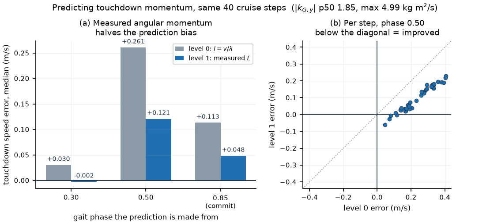
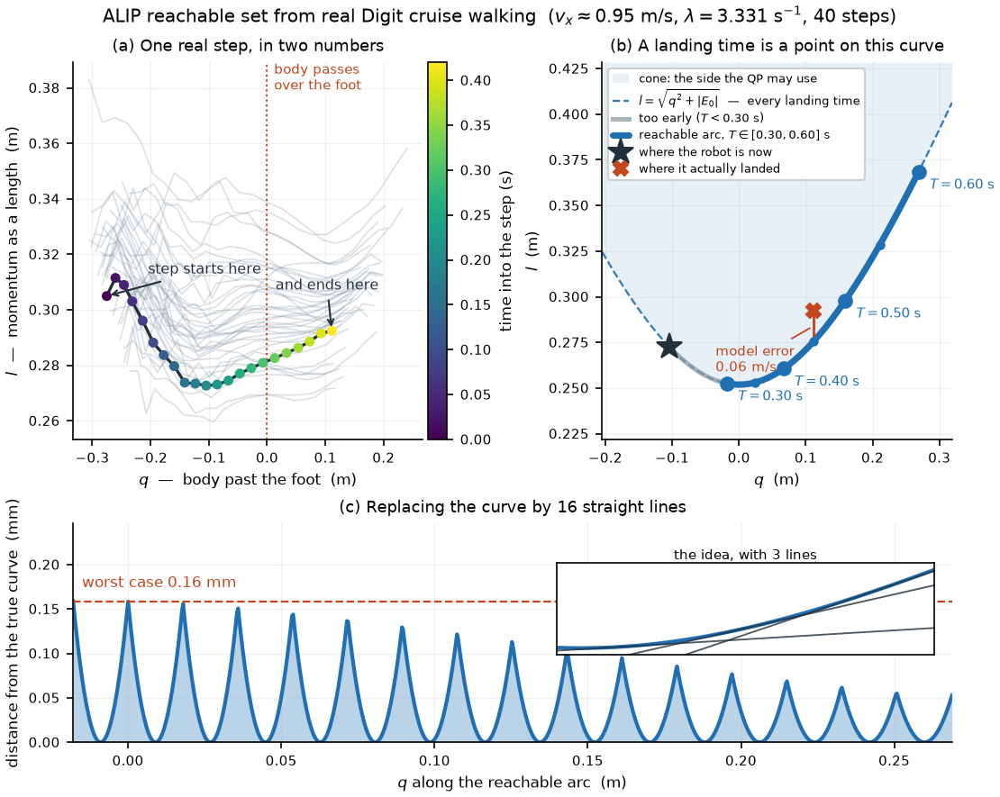

ALIP Footstep Planner Formulation (Angular Momentum + Conic Step Duration)¶
Status: working Formulation evidence: 2026-09-18; implementation mapping reviewed: 2026-10-18 Tags:
alipangular-momentumfootstep-planningmpcsecond-order-conecapturability
This reference retains the ALIP derivations and bounded September measurements, with the current implementation mapped below. The kernel reference, module contract and Digit app own implemented behavior and validation limits.
Current implementation map¶
| Topic | Implemented behavior | How to read the derivation |
|---|---|---|
| Kernel | Independent C++ ALIP planner, using one shared timing pair for both axes | The conic model motivates the timing representation; it does not imply an exact nonlinear cone solve |
| Timing | Tangent relaxation or opt-in SOS2 interval enumeration, followed by exact-flow checks | SOS2 is continuous timing within enumerated adjacency intervals, not a grid of fixed durations |
| Pivot and prediction | Digit latches the measured stance foot-link position and plans from measured CoM/contact momentum | The CoP and fitted-bias studies in Section 5 are alternatives, not the installed pivot/predictor |
| Constraints and recovery | Executed geometry stays hard; explicit recovery can report negative viability margin | certified covers the first reduced-model successor, not physical recovery or all future nodes |
| Lifecycle and admission | Shared planner-owned coordinator replays full-rate contact capacity and installed-preview timing | Use the coordinator reference, not the original force-threshold proposal |
| Deployment scope | Digit's current ALIP app is blind; kernel model-height input is separate from terrain preview | Disjoint-region and variable-height preview extensions below remain formulation material |
The numerical constants in the derivations are reproducible fixtures. They are not live app defaults: the current Digit profile uses a 0.47 s nominal duration, 0.25–0.60 s duration bounds and 0.15–0.75 m width bounds. Its app commits at phase 0.95 and enables a 0.2 s/s late retiming bound from phase 0.4. Read the resolved run configuration for an experiment.
This note is the formulation of an angular-momentum footstep planner. Its two structural choices are:
- The state is angular momentum about the contact, not a divergent position/velocity mixture. Angular-momentum balance about a point contact is exact for the full articulated robot; the approximation is confined to one measurable kinematic term.
- Step duration is a decision variable represented exactly, as a point on a second-order cone, rather than gridded, linearized, or introduced through integers.
The decision variable is the touchdown-relative placement \(r_k = p_{k+1} - c^-_{k+1}\) — where the foot lands relative to where the body will be — with the world foothold \(p_{k+1}\) retained as a derived affine quantity so that terrain constraints are unaffected.
The document is organized the same way as the companion DCM formulation:
- Flat terrain baseline (Sections 1–8): one convex QP.
- Stepping stones (Section 9): disjoint foothold regions produce an MIQP.
- Variable height (Section 10): discrete region heights retain the MIQP structure with additional precomputation.
Section 11 summarizes the three levels side by side. Sections 12–20 carry the controller contract, the rejected alternatives, the implementation, failure and validation contracts, and a provenance table for every measured number quoted above.
Self-containment. Every derivation, constant, and measured number used below is stated in this document. Section 20 records where each measurement came from, so the body text needs no forward reference to a journal entry, an evidence capsule, or a prior design note in order to be read.
Relationship to the DCM formulation. The DCM reference distinguishes the current C++ kernel from its retired Python formulation. This note is a different formulation of the same problem, not a revision of that one. Where the two agree — the viable set of Section 3.2, the lateral periodic offset of Section 6.4, the cumulative progress objective of Section 7.2 — the agreement is derived here rather than imported, and Section 3.2 shows the two derivations produce the same set.
Formulation boundary. This is a numerical formulation. It owns the planning model, the optimization, the prediction, and the interface it requires of a controller. It does not own swing trajectories, contact admission, the support-transition clock, task gains, or navigation. Where it constrains those, it says so as a contract (Section 12) rather than specifying them.
Evidence boundary. The measurements in Sections 2.7, 5, and 12.6 come from 40 clean steps of one flat cruise-walking log at \(v_x \approx 0.95\) m/s, plus offline analysis of a terrain matrix. One terrain, one speed, one log for the momentum results. Those measurements predate the implemented ALIP kernel and do not qualify it or hardware. Section 17 states research validation questions; current runtime evidence belongs to the app validation record.
1) Core model, frames, and notation¶
1.1) Why angular momentum is the primitive¶
For a point contact, the ground reaction force acts at the contact and therefore exerts no moment about it. Angular-momentum balance about the contact point \(p\) then involves gravity alone:
where \(q = c - p\) is the CoM position relative to the contact, \(m\) is total mass, and \(L\) is angular momentum about \(p\). Equation (1.1) is exact for the full articulated robot: no lumped mass, no constant height, no small-angle assumption, no assumption about the internal configuration. The moment arm is the true CoM offset and the only force with a moment about \(p\) is gravity acting at the CoM.
The same argument makes \(L\) conserved through the impulsive part of touchdown: the impulse acts at the new contact and has zero moment arm about it.
The approximation lives entirely in the kinematic half — the relation between momentum and the rate of change of position:
with \(H\) the CoM height above the contact plane and \(k_G\) the centroidal angular momentum (the angular momentum of the robot about its own CoM).
This is the reverse of the LIP/DCM split. There, the divergent coordinate \(\xi = q + \dot q/\lambda\) mixes position and velocity, and both halves of the dynamics are approximate together: the constant-height assumption enters the force balance and the kinematics at once. Here the dynamic half (1.1) is exact and the whole approximation is one term, \(k_G\), which is already computed at runtime as the angular half of the 6-D centroidal momentum. Isolating the approximation in a measurable quantity is the practical reason to change primitive; Section 2.7 measures it.
The three quantities the planner cares about separate cleanly:
| quantity | status across a step |
|---|---|
| CoM position relative to the new contact | assigned: \(q_{k+1} = -r_k\), by definition of \(r_k\) |
| angular momentum about the contact | continuous, exactly, at constant CoM height |
| absolute CoM position | never appears |
The third row is structural, not an error-cancellation property. The coordinates in which the problem is posed do not contain absolute position, so no estimate of it can be wrong. This is the same property that makes the formulation insensitive to stance-foot drift, and Section 12.6 is careful about how much that is worth.
1.2) Scaled momentum and the two-axis normal form¶
Angular momentum and position have different units, which makes every gain in the formulation carry a scale factor and every ported constant a chance to be wrong by a power of \(\lambda\). Define the scaled momentum, a length:
Index convention. Subscripts on \(L\) and \(k_G\) name a component of an angular-momentum vector. Everywhere else in this document a subscript is a step index and a superscript \(x\) or \(y\) is a horizontal motion axis. Sagittal motion is driven by \(L_y\) and lateral motion by \(L_x\), which is why the two labels appear crossed in (1.3). This matches the superscript-axis convention of the DCM formulation, where \(e_k^x\) and \(\nu_k^y\) are read the same way.
The lateral sign in (1.3) is load-bearing. With it, and with (1.1)–(1.2) at \(k_G = 0\), \(\dot z = 0\), both axes obey the same system:
Without the lateral sign flip, the lateral system integrates to the same magnitudes with a reflected eigenvector. It therefore passes any test that asks "does this grow at rate \(\lambda\)" and fails only in closed loop, where the feedback pushes the wrong way. Section 15.2 makes this a required test.
Note that whenever \(k_G = 0\) and \(\dot z = 0\),
so every result stated in velocity coordinates maps into this document by substituting \(v/\lambda \mapsto \ell\). The two formulations are related by a similarity transform, not by a modelling change; what differs is that \(\ell\) is defined from measured angular momentum while \(v/\lambda\) is assumed equal to it.
1.3) Divergent and convergent coordinates¶
The matrix in (1.4) has eigenvalues \(\pm\lambda\) with eigenvectors \((1,1)\) and \((1,-1)\). Define
These diagonalize the flow:
\(\xi\) is the divergent component of motion — the relative DCM, measured from the contact. \(\zeta\) is its convergent counterpart. They are retained as derived quantities, because the viability sets of Section 3 and the capturability conditions of Section 8 are naturally stated on \(\xi\); the state of the planner remains \((q,\ell)\).
Notation note. The DCM formulation writes the DCM as \(z\) and uses \(\eta_k\) for the DCM error rotated into node heading coordinates. This document uses \(\xi\) for the divergent coordinate and \(\zeta\) for the convergent one, and never uses \(\eta\), so the two documents can be read side by side. Under (1.5), this \(\xi\) equals that document's \(e_k = z_k - p_k\).
Two immediate consequences used throughout:
- Monotonicity. \(\xi\) is strictly monotone in time on both axes with no sign caveat, because \(\xi(t)/\xi_0 = e^{\lambda t}\) regardless of the sign of \(\xi_0\). In contrast \(\dot q = \lambda \ell\) makes \(q\) monotone only while \(\ell > 0\), which fails laterally. Every timing bound in this document is therefore imposed on \(\xi\) (Section 4.5).
- An invariant. \(\xi\zeta\) is constant along the flow, and \(\xi\zeta = q^2 - \ell^2\). Section 4.3 turns this into the conic representation of step duration.
1.4) Step-indexed variables¶
At (touchdown of) step \(k\), in the solve chart of Section 1.5:
- Contact point \(p_k \in \mathbb{R}^2\); \(p_1\) is the current stance.
- CoM relative to the contact \(q_k \in \mathbb{R}^2\).
- Scaled momentum \(\ell_k \in \mathbb{R}^2\), in metres, from (1.3).
- Touchdown-relative placement \(r_k := p_{k+1} - c^-_{k+1} \in \mathbb{R}^2\). The decision variable. The superscript \(^-\) denotes the value immediately before the support exchange at the end of step \(k\).
- Stance-relative displacement \(u_k := p_{k+1} - p_k\). Derived, not decided.
- Stance side \(s_k \in \{-1,+1\}\) with \(s_{k+1} = -s_k\). Positive \(s\) means the sign that folds lateral quantities so "inboard" is positive.
- Step duration \(T_k\), with \(\theta_k := \lambda T_k\) and \(\sigma_k := e^{\theta_k}\).
- Elapsed and remaining time in the current step, \(\tilde t\) and \(\tau := T_1 - \tilde t\).
1.5) The captured-yaw solve chart¶
All planar quantities are expressed in a chart whose origin is the current stance contact and whose orientation \(R\_{CW}\) is the planner's own accepted heading, captured once when the step is accepted and never refreshed mid-step.
Three properties this buys, all of which the DCM formulation also relies on:
- Every rotation is a constant of the solve. Heading is not a decision variable, so reach boxes, width bands, and progress chords stay linear.
- Measured yaw never enters. Stance-foot yaw is distorted on uneven terrain and by single-corner contact; using it would inject that distortion into a placement command. Desired heading is planner-owned state, and the body and feet are downstream tracking systems.
- Roll and pitch are excluded outright, so trunk attitude oscillation does not appear in a foot placement.
A non-finite captured yaw is rejected without replacing the last valid capture, and reset clears it so a stale chart cannot cross a session (Section 15.3).
1.6) Simplifying assumptions¶
These hold throughout unless a section states otherwise.
- Point contact. The center of pressure is the contact point; no ankle torque is exploited. (1.1) is exact under this assumption; Section 19 notes what a finite foot would change.
- Single support only. Double support is not modelled; the exchange is instantaneous. The \(L\)-conservation argument at touchdown assumes a single impulsive contact.
- Constant CoM height within a step, so (1.2) reduces and (1.4) applies. Section 2.4 restores the leading \(\dot z\) and \(\Delta z\) terms exactly where they matter, and Section 19 states what non-constant \(H(t)\) breaks.
- \(k_G\) is an input, not a decision. The planner measures it or ignores it (Section 2.7); it never plans a centroidal momentum profile.
- Heading is precomputed. As in the DCM formulation, the desired heading sequence is fixed before assembly to preserve linearity.
- No swing trajectory optimization. Only the landing condition is decided. The path that reaches it is the executor's (Section 12.4).
1.7) Reference constants¶
Digit values, so every number in this document is reproducible:
| quantity | symbol | value |
|---|---|---|
| CoM height above contact | \(H\) | \(0.859\) m |
| total mass | \(m\) | \(\approx 50\) kg (fixture value; confirm against model.total_mass()) |
| LIP frequency | \(\lambda = \sqrt{g/H}\) | \(3.3794\ \mathrm{s^{-1}}\) |
| nominal step duration | \(T\) | \(0.44\) s |
| \(\theta = \lambda T\) | \(1.4869\) | |
| \(\cosh\theta\) | \(2.32478\) | |
| \(\sinh\theta\) | \(2.09872\) | |
| \(\sigma = e^\theta\) | \(4.4235\) | |
| momentum scale | \(mH\lambda\) | \(145.1\ \mathrm{kg\,m^2/s}\) per metre |
| length scale | \(H\lambda\) | \(2.9029\ \mathrm{m/s}\) per metre |
| nominal step width | \(W_{\mathrm{nom}}\) | \(0.28\) m |
| width bounds | \(W_{\min}, W_{\max}\) | \(0.15\) m, \(0.60\) m |
| duration bounds | \(T_{\min}, T_{\max}\) | \(0.30\) s, \(0.60\) s |
The width bounds are stated because Section 3.2's lateral band is a function of them alone, and the band is not reproducible without them.
2) Touchdown-relative coordinates and the return map¶
2.1) The decision variable¶
Classical footstep planners decide the world foothold \(p_{k+1}\), or equivalently the stance-relative displacement \(u_k = p_{k+1} - p_k\). This formulation decides
— where the foot lands relative to where the body will be at that instant.
The motivation is (1.2) and the table in Section 1.1: under (2.1), post-exchange CoM position relative to the new stance is not a state to be predicted, it is the command. The only quantity that has to survive a support exchange is momentum, and (1.1) says momentum survives it exactly.
The world foothold is retained, as a derived quantity linked by the prediction
so terrain regions, obstacles, and navigation targets remain expressible. Section 2.6 shows this relation stays affine in the decision variables, which is what keeps stepping stones an MIQP rather than something worse. The planner does not abandon world footholds and does not switch frames by terrain; it optimizes in \(r_k\) while carrying \(p_{k+1}\) alongside.
| variable | carries |
|---|---|
| \(r_k\) | leg reach, self-collision, nominal gait geometry |
| \(\xi_{k+1} = \ell^-_{k+1} - r_k\) | viability, capturability, momentum regulation |
| \(p_{k+1}\) | terrain regions, obstacles, navigation |
| \(T_k\) | timing authority |
The middle row follows from \(\xi_{k+1} = q_{k+1} + \ell_{k+1}\) with \(q_{k+1} = -r_k\) and \(\ell_{k+1} = \ell^-_{k+1}\) on level ground: the divergent coordinate immediately after touchdown is the predicted momentum minus the placement. This single identity is why the viability constraint of Section 3 is a box on \(r_k\) rather than a condition on a predicted capture point.
2.2) The within-step flow¶
From (1.4), over a step of duration \(T_k\) starting from the post-exchange state \((q_k, \ell_k)\):
Both coefficients are dimensionless, because \(q\) and \(\ell\) are both lengths. In the velocity formulation the corresponding coefficients are \(\sinh\theta/\lambda\) and \(\lambda\sinh\theta\), and every ported constant is a chance to be wrong by a power of \(\lambda\) (Section 15.2).
2.3) The touchdown reset¶
Two things happen at the support exchange: the foot lands at \(p_{k+1}\), and the reference point for angular momentum moves from \(p_k\) to \(p_{k+1}\).
Position. By the definition (2.1), \(p_{k+1} = c^-_{k+1} + r_k\), so
This is an identity, not a model. Post-touchdown CoM position relative to stance is not a state — it is the command.
Momentum. Angular momentum about a point transforms as
and the ground impulse at the new contact has zero moment arm about \(p'\), so (1.1) holds through the exchange. Writing \(p' - p = (u_k, \Delta z_k)\) with \(u_k\) horizontal and \(\Delta z_k\) the vertical step, and taking components:
Dividing by \(mH\lambda\) and applying the opposite signs of (1.3) to the two axes, both reduce to the same expression. Per axis,
That the lateral sign flip in (1.3) is exactly what makes (2.5) uniform across axes is a second, independent reason to adopt it.
2.4) The exchange correction is not always zero¶
At constant CoM height on level contact, \(\dot z^- = 0\) and \(\Delta z_k = 0\), so \(e_k = 0\) exactly and momentum is continuous. That is the regime in which "absolute position never appears" is an exact statement.
It is not the regime that currently fails. Evaluating (2.5) at the Digit constants:
| condition | \(e_k\) | equivalent \(\Delta v = \lambda e_k\) |
|---|---|---|
| level contact, base descending \(0.25\) m/s, \(u = 0.44\) m | \(-37.9\) mm | \(-0.128\) m/s |
| level CoM, \(50\) mm step down, \(v^x = 1\) m/s | \(+17.2\) mm | \(+0.058\) m/s |
| both together | \(-20.7\) mm | \(-0.070\) m/s |
Three consequences.
- On terrain the horizontal step re-enters the momentum equation. The claim that position never appears is exact only at constant height on level contact. Through the \(u_k\dot z^-\) term, the very quantity the formulation was arranged to eliminate comes back.
- It re-enters affinely. \(u_k\) is affine in the decision variables through (2.7), and \(\dot z^-\), \(\Delta z_k\) are predicted constants of the solve. So the correction costs the QP nothing structurally — it is an extra affine term in an existing equality row.
- The two contributions have opposite sign on descending stairs. A descending base makes \(e_k\) negative; a downward step makes it positive. A single lumped "descent correction" constant therefore cannot fit both, and attempting to calibrate one will produce a term that is correct at one descent rate and wrong at every other.
2.5) The return map¶
Substituting the reset (2.4) into the flow (2.3) eliminates position entirely. Propagating step \(k+1\) from its post-exchange state \((q_{k+1},\ell_{k+1}) = (-r_k, \ell^-_{k+1} + e_k)\) and applying (2.5) again at its own exchange:
One scalar state per axis, one step of input delay, dimensionless coefficients. This is the rigorous form of the folk statement that CoM velocity is the primary indicator of gait stability: under touchdown-relative commands, momentum is the only quantity that persists across a touchdown.
The one-step delay is the structural reason a preview planner differs from a gain rather than merely being a more accurate version of one. The placement chosen now appears in (2.6) as \(r_{k-1}\) — it acts on the next stance phase.
now touchdown k+1 touchdown k+2
| | |
|------ current stance --------|-------- next stance ----------|
| | |
(q,l)(t_now) --- ALIP predict --> l^-_{k+1} --- reset by r_k --> l^-_{k+2}
^
|
r_k chosen NOW, from (q,l)(t_now)
Predicting \(\ell^-_{k+1}\) is what converts the delayed plant into a first-order closed loop; Section 6.7 shows what happens to a controller that latches on the measured \(\ell_k\) instead.
2.6) World footholds remain affine¶
Substituting (2.3) and (2.4) into (2.2):
Every term is affine in the decision variables at fixed \(\theta_k\). Therefore:
- big-\(M\) foothold membership (Section 9) survives intact;
- the cumulative progress objective \(F_k = \sum_{i<k}\hat x_i^\top(p_{i+1}-p_i)\) survives intact;
- the exchange correction's \(u_k\) dependence (Section 2.4) is affine, as claimed.
Note the coefficient \(\sinh\theta_k\) is dimensionless, where the velocity form carries \(\sinh\theta_k/\lambda\).
2.7) Centroidal angular momentum: three levels¶
\(k_G\) is the entire approximation in this formulation, so the question of what to do about it deserves a decision rather than a default. There are three implementable levels:
| level | kinematic relation | cost |
|---|---|---|
| 0 classic ALIP | \(\dot q = L/(mH)\), i.e. \(k_G \equiv 0\) | none; the usual implicit assumption |
| 1 measured initial condition | \(\ell_0\) formed from measured \(L = k_G + m\,(c - p)\times v\) | one already-computed vector |
| 2 predicted profile | \(k_G(t)\) from the authored swing path, as an affine input to (1.4) | needs a swing-limb momentum model |
Level 1 is the recommendation. The sensitivity of predicted velocity to a neglected centroidal momentum is
Measured on 40 cruise steps at \(v_x \approx 0.95\) m/s (\(m = 47.23\) kg, \(\lambda = 3.331\ \mathrm{s^{-1}}\), CoM height above contact \(0.88\) m), propagating (2.3) from a given gait phase to the measured touchdown and comparing against measured touchdown momentum:
| gait phase | level 0 median | level 1 median | absolute p95, level 0 \(\to\) 1 |
|---|---|---|---|
| \(0.30\) | \(+0.030\) m/s | \(-0.002\) m/s | — |
| \(0.50\) | \(+0.261\) m/s | \(+0.121\) m/s | \(0.392 \to 0.195\) m/s |
| \(0.85\) (commit) | \(+0.113\) m/s | \(+0.048\) m/s | \(0.148 \to 0.074\) m/s |
All 40 steps improve, not only the median.

The level-0 bias at phase \(0.50\) reproduces the magnitude of the fore-aft touchdown-velocity bias recorded independently for this stack (\(0.205\)–\(0.240\) m/s), and carrying measured \(k_G\) removes about half of it — \(54\%\) at phase \(0.50\), \(57\%\) at commit.
One caution the same data supplies. Attributing the whole bias to \(k_G\) through (2.8) would require \(\Delta k_G \approx 0.22 \times 47.23 \times 0.88 \approx 9.5\ \mathrm{kg\,m^2/s}\). Measured \(|k_{G,y}|\) on these steps is p50 \(1.85\), max \(4.99\ \mathrm{kg\,m^2/s}\) — two to five times smaller. So \(k_G\) is one contributor among several, not the whole bias, and the four-term regression of Section 5.4 remains necessary.
A second caution, which bounds the whole model. The ALIP invariant \(\ell^2 - q^2\) is not conserved on the real robot: over these steps it drifts about \(96\%\) of its own mean within a step at level 1, against \(144\%\) at level 0. Level 1 halves the drift and does not remove it. Section 4.3 builds the conic representation on exact conservation of the model; Section 4.9 and Section 12.2 are both careful that this is a statement about the model and not about the robot.
Level 2 is attractive because the swing trajectory is authored, so its momentum contribution is predictable rather than merely observable. It is an extension, not a prerequisite, and Section 17 sequences it last.
3) The admissible touchdown set¶
3.1) Three constraint families become three sets in one variable¶
Every constraint a footstep must satisfy becomes a set in the single variable \(r_k\):
Kinematic, \(\mathcal R_k\). A reach box in the heading-aligned chart:
This is a conservative polytope evaluated at nominal posture. A configuration-conditioned \(\mathcal R_k(\text{joint state})\) is a refinement, not a prerequisite.
Dynamic, \(\mathcal B_k\). Membership of the divergent coordinate in the viable set. Because \(\xi_{k+1} = \ell^-_{k+1} - r_k\) (Section 2.1),
a reflection of the viability set translated by the predicted momentum. No predicted capture point appears; the constraint is a box on the decision variable.
Environmental, \(\mathcal P_k\). A foothold region on the world position becomes, through (2.2), \(p_{k+1}\in\mathcal P_k \Leftrightarrow r_k \in \mathcal P_k - \hat c^-_{k+1}\): the terrain region translated by the predicted body position.
r_y (lateral, touchdown-relative)
^
| .-------------------.
leg workspace | .----| P_k - c^-(T) | terrain region,
R_k +-----+---+ | (shifted by | shifted by predicted
| | ###|###| body prediction) | body position
| |####|###'-------------------'
| .--+----+-------------.
| | |####| F_k(T) | <-- l^-(T) - B_k
| | | | admissible | viable set, reflected and
+--+--+----+-------------+ translated by predicted momentum
| '------------------'
'-------------------------------> r_x (forward)
Footstep planning is finding a point in the intersection of a body-relative kinematic set, a momentum-shifted dynamic set, and a prediction-shifted environmental set. Section 3.4 replaces "finding a point" with "finding the most interior point," which is the useful version.
What step duration does, geometrically. \(\mathcal R_k\) is fixed to first order. The other two sets translate with \(T\), at different rates:
So duration slides the dynamic and environmental sets relative to each other and to the fixed kinematic set. That is the precise version of "timing enlarges the admissible set when placement alone lacks authority": \(T\) reshapes the feasible set, \(r\) moves within it.
3.2) The viable set, derived¶
The viable set \(\mathcal B_k\) is the maximal controlled-invariant set of the divergent coordinate under bounded steps. It is a property of the return map, not an artefact of the DCM formulation, so it is derived here rather than imported.
From (2.4), (2.5) and (1.7), with \(u_k = p_{k+1} - p_k\) the stance-relative displacement,
Derivation. \(\xi^-_{k+1} = \sigma_k \xi_k\) by (1.7); \(u_k = q^-_{k+1} + r_k\) by (2.2); and \(\xi_{k+1} = -r_k + \ell^-_{k+1} = \sigma_k\xi_k - q^-_{k+1} - r_k\). \(\square\)
Longitudinal axis. With \(|u^x_k| \le L_{\max}\), seek the widest symmetric interval \(|\xi^x| \le B_x\) from which some legal step returns the successor to the interval. From \(\xi^x = B_x\) the successor \(\sigma B_x - u^x\) lies in \([-B_x, B_x]\) for some feasible \(u^x\) iff \((\sigma - 1)B_x \le L_{\max}\), so
Lateral axis. The legs cannot cross, so the lateral input is \(W_k := s_k u^y_k \in [W_{\min}, W_{\max}]\) with \(W_{\min} > 0\) — a bounded set that does not contain zero. Fold the divergent coordinate by stance side, \(\hat\xi_k := s_k\,\xi^y_k\), and multiply (3.3) by \(s_{k+1} = -s_k\):
Seek the widest interval \([L, U]\) with the same property. At \(\hat\xi = U\) the largest achievable successor uses the widest, least-divergent step and must reach \(L\); at \(\hat\xi = L\) the smallest achievable successor uses the narrowest, least-divergent step and must reach \(U\):
Solving the pair,
Both \(B_x\) and the band \([L,U]\) are widest at the smallest admissible \(\sigma\), so the hard set is evaluated at \(\sigma_{\min} = e^{\lambda T_{\min}}\):
This does not make \(T_{\min}\) a recovery mode. It proves the existential statement behind controlled invariance: a state on the boundary may need the shortest ordinary step, while an interior state may use any feasible duration.
At the Digit constants of Section 1.7 (\(W_{\min}=0.15\), \(W_{\max}=0.60\) m):
| \(T\) | \(\sigma\) | lateral band \([L,U]\) | contains \(0\)? | periodic offset \(W_{\mathrm{nom}}/(1+\sigma)\) |
|---|---|---|---|---|
| \(0.30\) | \(2.756\) | \([-0.0283,\;+0.2280]\) | yes | \(0.0745\) |
| \(0.44\) | \(4.423\) | \([+0.0034,\;+0.1349]\) | no | \(0.0516\) |
| \(0.60\) | \(7.596\) | \([+0.0095,\;+0.0777]\) | no | \(0.0326\) |
Do not substitute the one-step capture band \([\,W_{\min}/\sigma_{\max},\; W_{\max}/\sigma_{\min}\,]\). It is strictly wider and it is not invariant: from its upper endpoint every admissible next step leaves it. Because both bands are positive intervals of similar magnitude, an implementation that confuses them looks correct in nominal walking and fails only near the boundary. This is the single most likely silent regression in any rewrite, and Section 17 requires a focused test that separates them.
3.3) Viability and capturability are not the same object¶
The two are routinely conflated, and the fore-aft axis is what makes them look identical.
Fore-aft, they genuinely coincide. Driving \(\xi_{N+1} = 0\) from (3.3) requires \(\xi_1 = \sum_{i=1}^{N}\sigma^{-i}u_i\), so the \(N\)-step capturable set is
whose limit is exactly \(B_x\) from (3.4). For a scalar linear map with a symmetric input bound containing zero, the maximal controlled-invariant set and the infinite-step capturable set coincide.
Laterally they do not, and that is the important case. The lateral input set \([W_{\min}, W_{\max}]\) has \(W_{\min} > 0\), so the band (3.6) is asymmetric and, at every cadence the gait actually uses, does not contain zero — see the table above. The lateral divergent coordinate must stay strictly inboard of the stance foot.
The consequence is not a technicality. There is no single-contact rest state laterally. \(\hat\xi^y = 0\) lies outside the viable band at \(T \ge 0.44\) s, so the robot cannot stop by standing on one foot; it must keep stepping, and the band is the guarantee that it can. Stopping is a double-support condition that the single-contact model of Section 1 cannot express at all.
Hence the split this formulation adopts:
| walking | stopping | |
|---|---|---|
| constraint | viability: \(\xi_{k+1}\in\mathcal B_k\), hard, both axes | capturability: (3.8), hard, fore-aft only |
| lateral terminal condition | the invariant band, periodic | double-support capture region, not planner-owned |
| status of the other | capture index is a diagnostic only | viability remains hard |
Two reasons not to put capture rows in the walking objective.
- They are slack. On the 40 cruise steps of Section 2.7, \(|\xi_{k+1}|/B_x\) is p50 \(0.169\), max \(0.444\), and every step is one-step capturable.
- The \(N\)-step family collapses at this cadence. From (3.8), \(N=2\) gives \(94.9\%\) of the \(N=\infty\) bound and \(N=3\) gives \(98.8\%\). The rows would be near-duplicates of the viability rows sitting beside them.
Section 8 restores capturability where it is the actual constraint.
3.4) Margin instead of mere feasibility¶
Requiring \(r_k \in \mathcal F_k\) answers a yes/no question. At a 50 Hz replan rate an infeasible return is unusable, and a barely-feasible return is indistinguishable from a comfortable one. Maximize the inscribed (Chebyshev) margin instead.
Collect every inequality row of (3.1)–(3.2) as \(A_i r_k \le b_i\), normalized at assembly so \(\lVert A_i\rVert_2 = 1\), and introduce a scalar \(m_k\):
The normalization does two jobs at once: it fixes row scaling for the solver, and it makes \(m_k\) a signed recovery margin in metres — the distance from the chosen placement to the nearest binding constraint.
\(m_k < 0\) is then a quantified infeasibility accompanied by a best-effort placement, rather than a failed solve. Section 16 classifies it as a margin event, not a solver failure, precisely so that the two are never confused in the logs.
4) Step duration as a conic decision¶
Step duration enters (2.3) through \(\cosh\lambda T\) and \(\sinh\lambda T\). A quadratic program cannot represent either. The conventional responses — grid the duration and solve repeatedly, linearize about a nominal, or introduce integer variables — each pay for the nonlinearity in solve count, accuracy, or problem class. This section shows none of them is necessary.
4.1) The idea in plain terms¶
While the robot stands on one foot it is an upside-down pendulum. Two numbers say everything about it: \(q\), how far the body has travelled past the foot, and \(\ell\), how much forward momentum it carries — written as a length so the two are comparable.
Gravity couples them in a fixed way. The further the body is past the foot, the faster it gains momentum; the more momentum it has, the faster it travels past the foot. Exactly as a pendulum conserves energy, this pair conserves
so as time passes the pair \((q,\ell)\) slides along one fixed curve and cannot leave it. The curve is set the moment the foot lands; after that, time only says how far along the pair has slid.
That is the whole trick. The question "how long should this step last?" and the question "which point on the curve should we land at?" are the same question. Asking it the second way is much easier for an optimizer, because time appears inside \(\cosh\) and \(\sinh\), which a QP cannot represent, while a point on a curve is just a pair of numbers.
Two properties make it work:
- The curve is bowl-shaped (convex). The region above a bowl is what optimizers call a cone, and cones are easy to optimize over.
- A bowl can be traced by straight lines laid against it. Straight lines are the only thing a plain QP understands, and sixteen of them reproduce the curve to a fraction of a millimetre — far finer than the model's own accuracy.

Real Digit cruise walking at \(v_x \approx 0.95\) m/s. (a) one real step in the two coordinates, forty steps faintly behind it. (b) from one instant mid-step, the reachable arc for \(T \in [0.30, 0.60]\) s, with each candidate duration marked. (c) sixteen tangent lines reproduce the arc to \(0.16\) mm on this step.
Panel (b) also shows the honest limit. The curve is where the model says the robot must be; the cross marks where it actually landed. That gap — \(0.06\) m/s on this step — is model error, not solver error, and it is what Section 5 exists to measure and correct. The cone is exact about the model; the model is approximate about the robot.
4.2) The reachable terminal set is a known curve¶
At solve time, \(q(\tilde t)\) and \(\ell(\tilde t)\) are measured constants. Propagating (1.4) over the remaining time \(\tau\),
As \(\tau\) ranges over its admissible interval, (4.1) traces a known one-dimensional curve in the plane, computable before the QP is assembled and independent of every decision variable.
The design question is therefore not "how do we handle a nonlinear \(T\)" but "how do we represent a known curve in a convex program." Section 13.2 enumerates the answers; this section takes the one that is exact.
4.3) The curve is a cone boundary¶
From (1.7), \(\xi(t)\zeta(t) = \xi_0\zeta_0\) is invariant along the flow, and by (1.6) \(\xi\zeta = q^2 - \ell^2\). Writing \(E_0 := \xi_0\zeta_0\) evaluated at the solve instant,
For the walking branch — \(\xi_0 > 0\) and \(\zeta_0 < 0\), hence \(E_0 < 0\), with \(\ell^- > 0\) — this solves as
which is convex in \(q^-\). The reachable set is therefore the boundary of a second-order cone, and the convex relaxation
is exact on the physical side, with no linearization, no sampling, and no integer variable.
Step duration disappears from the problem. The planner chooses where on the cone boundary to land; \(T\) is recovered afterwards by Section 4.7.
Verified to machine precision along a simulated flow: \(\xi\zeta = -0.073401\) at \(T \in \{0,\,0.15,\,0.30,\,0.45,\,0.60\}\), with \(\ell - \sqrt{q^2 + |E_0|}\) below \(10^{-16}\) at every sample.
4.4) Branch selection¶
Carry \((\xi_0,\zeta_0)\), not \(E_0\). The product is sign-blind: \(E_0 = 0\) means \(\zeta_0 = 0\) or \(\xi_0 = 0\), which are two different separatrices, and \(E_0 < 0\) admits \(\ell^- > 0\) or \(\ell^- < 0\). By (1.7) neither \(\xi\) nor \(\zeta\) changes sign during a step, so the branch is fixed for the whole solve and is read off once:
| \(\operatorname{sign} E_0\) | branch condition | conic row |
|---|---|---|
| \(E_0 < 0\) | \(\ell^- > 0\) | \(\ell^- \ge \sqrt{(q^-)^2 + \lvert E_0\rvert}\) |
| \(E_0 < 0\) | \(\ell^- < 0\) | \(-\ell^- \ge \sqrt{(q^-)^2 + \lvert E_0\rvert}\) |
| \(E_0 > 0\) | \(q^- > 0\) | \(q^- \ge \sqrt{(\ell^-)^2 + E_0}\) |
| \(E_0 > 0\) | \(q^- < 0\) | \(-q^- \ge \sqrt{(\ell^-)^2 + E_0}\) |
Sagittal walking sits on the first row throughout. The lateral axis in the folded side-signed coordinate must be classified per step and per solve: it is the axis on which the CoM crosses over the foot, so \(E_0 > 0\) is reachable there. Section 19 asks how often this actually happens.
4.5) Duration bounds go on the divergent coordinate¶
Two linear rows, because \(\xi_0\) and the exponentials are constants of the solve.
Use \(\xi^-\), not \(q^-\). By (1.7), \(\xi\) is strictly monotone in \(\tau\) on both axes with no sign caveat, whereas \(\dot q = \lambda \ell\) makes \(q^-\) monotone only while \(\ell > 0\) — which fails laterally, on exactly the axis where the branch can flip.
\(\tau_{\min}\) carries the causality floor \(\tau \ge \tau_{\text{reserve}}\): a solve issued at elapsed time \(\tilde t\) must never command a landing already in the past, and a positive reserve additionally guarantees the swing policy a finite remaining interval. \(\tau_{\max} = T_{\max} - \tilde t\). When the floor overruns the ceiling, the ceiling yields: \(T_{\max}\) is a gait-shape preference and causality is not.
4.6) Polyhedral form: no cone solver required¶
A two-dimensional cone is tightly representable by tangent lines, each taken in the relaxation's own direction. With \(f(q) = \sqrt{q^2 + |E_0|}\),
Each row is a supporting hyperplane of a convex function, so the polyhedron contains the cone and the relaxation is conservative in the correct direction.
| \(J\) | max gap to the true curve |
|---|---|
| \(4\) | \(3.33\) mm |
| \(8\) | \(0.88\) mm |
| \(\mathbf{16}\) | \(\mathbf{0.23}\) mm |
Sixteen linear rows on a plain QP; both September baseline solvers (eiquadprog, osqp) take this unchanged. On the particular step shown in the Section 4.1 figure the sixteen-tangent gap is \(0.16\) mm; \(0.23\) mm is the design figure across the duration band.
For scale, Section 5.6 measures the timing model's own residual at \(7.5\) ms rms, which at \(q^- = 0.22\) m is \(5.6\) mm of \(\ell\) — more than an order of magnitude above the polyhedral residual. Timing precision beyond a few millimetres is precision this model does not have, which is why \(J = 16\) is already generous.
4.7) Recovering the duration¶
One logarithm, exact, and defined for any feasible point — including one that has leaked off the curve (Section 4.9).
A useful corollary: \(\sigma_1 = e^{\lambda T_1} = e^{\lambda\tilde t}\, \xi^-/\xi_0\), so \(\sigma_1\) is affine in the decision variables. The reciprocal that defeats formulations parameterized by \(\sigma\) is an artefact of that parameterization; deciding the terminal point removes it. Section 8.2 depends on this.
4.8) The timing preference must be an exact penalty, not a quadratic cost¶
A quadratic timing weight in \(\sigma\)-units has a recorded failure mode: it held \(T_{\mathrm{ref}}\) on disturbed steps, where retiming was exactly the authority that was needed, and lowering the weight globally broke flat walking. The diagnosis was that the term needed to be state-dependent. Do not reintroduce \(w_T (T - T\_{\mathrm{ref}})^2\).
Use the same exact-penalty device as the viability rows:
Above a finite \(w_T\) the slack is provably zero whenever the soft box is feasible. So flat walking holds \(T\_{\mathrm{ref}}\) exactly with no quadratic pull, and a disturbed step opens \(s_T\) exactly as far as it needs and no further. That is state-dependence with no gain schedule and no mode switch.
The soft box is linear in \(\xi^-\) either by imposing it directly on \(\xi^-\) through (4.7)'s inverse, or by one linearization of the logarithm about \(T_{\mathrm{ref}}\).
Hold the setpoints \(r^\star\), \(\ell^\star\), \(\xi^{\mathrm{des}}\) at \(T\_{\mathrm{ref}}\), not at the decided duration. Making them track the decision variable creates a circular dependency and a non-quadratic cost; they are preferences, not physics.
4.9) Where the relaxation leaks, and the diagnostic¶
The relaxation (4.4) admits \(\ell^-\) above the curve — claiming more momentum than the position implies. Three properties bound the damage.
- Self-penalizing. \(\xi_{k+1} = \ell^- - r_k\), so extra claimed momentum requires a larger \(r_k\) to stay in the viability band, pushing against the reach box. A solver exploiting the leak makes its own constraints harder.
- Exploited when accelerating, where the momentum objective genuinely wants more \(\ell\) than the reachable point supplies — a regime far from the viability limits, where the error is tolerable.
- Measurable in one scalar. Log
If \(g_k\) is nonzero on executed steps, escalate to the SOS2 form of Section 13.2, which uses the same variables.
An exact postcheck closes the loop. Recover \(T_1\) from (4.7), re-evaluate \(q^-\), \(\ell^-\) and the margin with true \(\cosh\) and \(\sinh\), and size an inward execution reserve \(\varepsilon_{\mathrm{hard}}\) to cover the \(0.23\) mm polyhedral residual. This is the pattern the DCM planner already uses, where the QP is assembled at \(L_{\max}-\varepsilon_{\mathrm{hard}}\) and an independent postcheck evaluates the exact bound. A hard-row violation is never accepted as a solver-tolerance convention.
4.10) Why only the first duration is decided¶
Only step 1 executes before the next solve. Freeing \(\sigma_k\) for \(k \ge 2\) makes the products \(\cosh\theta_k\,\ell_k\) and \(\sinh\theta_k\, r_{k-1}\) in (2.6) bilinear in two decision variables, which leaves the QP class; the usual remedies (successive convexification, McCormick envelopes) turn one convex solve into an iterated nonlinear program with neither a bounded solve time nor a single feasibility certificate, and a per-tick footstep planner can carry neither.
Deeper steps therefore propagate at a fixed \(\sigma_{\mathrm{ref}}\), with constant \(\cosh\) and \(\sinh\) multiplying variable states — which is affine.
This does not pin the closed-loop cadence: the next solve again decides its own current-step duration, so deeper fixed-cadence rows are preview regularization rather than a commitment.
One gain over the September baseline DCM formulation is worth naming. There, the preview is pinned at the nominal cadence while the current step is retimed, and the mismatch leaves a recorded \(3.3\)–\(135\) mm lateral prediction band. Here step 1 carries its solved duration into the preview through \(\xi^-\), closing that gap.
5) Momentum prediction and its bias¶
Everything in Sections 3 and 4 is exact given \(\ell^-\). Section 2.7 already showed \(\ell^-\) is the quantity the model gets wrong. This section states the prediction, its sensitivities, and the correction structure.
5.1) Predict forward from the live measurement¶
Forward from the live measurement, never back-propagated to the last touchdown. Back-propagation would reconstruct the initial condition through the stance-foot estimate, reintroducing precisely the absolute-position dependence that Section 1.1 eliminated. \(\hat\delta\) is the learned bias corrector of Section 5.5.
5.2) Sensitivities¶
Differentiating (5.1), and converting to placement error through the closed-loop gain of Section 6.1 at \(\alpha_\ell = 1\):
| error source | gain to \(\ell^-\) | evaluated | placement error |
|---|---|---|---|
| pivot / \(q\) | \(\sinh\theta = 2.099\) | \(10\) mm of pivot | \(21\) mm |
| momentum \(\ell\) | \(\cosh\theta = 2.325\) | \(10\) mm (\(=34\) mm/s) | \(23\) mm |
| touchdown instant | \(\lambda\,q^-\) | \(50\) ms at \(q^- = 0.22\) m | \(37\) mm |
| neglected \(k_G\) | \(1/(mH\lambda)\) | \(5\ \mathrm{kg\,m^2/s}\) | \(34\) mm |
On the timing row. The gain \(\partial\ell^-/\partial t = \lambda q^-\) is state-dependent, so this row cannot be quoted without its operating point. At \(q^- = 0.22\) m — a representative late-step value, and the one Section 4.6 uses — \(50\) ms is \(37\) mm. Early in a step, at \(q^- \approx 0.10\) m, the same \(50\) ms is \(17\) mm. Both figures appear in earlier drafts of this design; they are the same formula at different points in the step, not a disagreement.
The first three rows are all of the same order, which is the useful conclusion: no single one of them dominates, so no single correction will fix the prediction.
5.3) CoP pivot alternative and its evidence¶
The original CoP proposal was motivated by two measurements. The current Digit implementation instead latches the foot-link pivot at the support transition, keeping it fixed through foot roll; this section explains the unadopted alternative.
- The anchor offset is mirrored. The toe-roll anchor and the foot link differ by \((0,\,-0.05456,\,-0.0315)\) m on the left and \((0,\,+0.05456,\,-0.0315)\) m on the right. Because the lateral components are mirrored rather than equal, the resulting bias alternates with stance side inside the lateral width loop, where it does not cancel over a gait cycle — it drives a period-2 asymmetry.
- Reproducing measured touchdown offsets required a fitted effective ZMP of \(+0.103\) m, which is \(3.3\times\) the \(31\) mm the pivot offset alone explains (Section 5.4). Two different numbers for what would be one effect if the pivot were the whole story.
Alternative requiring validation. A CoP-based predictor would need a filtered, persistent wrench estimate and an explicit source/fallback flag. It is not the current app rule; changing the pivot requires matched evidence because it changes both state construction and the fixed support chart.
5.4) Four candidate bias terms, to be regressed together¶
The measured fore-aft prediction bias is \(-0.205\) to \(-0.240\) m/s at p50 and present on flat, with p95 \(250\)–\(300\) mm/s; laterally p95 is \(83\) mm/s on flat and \(245\) mm/s on uneven terrain. At \(\alpha_\ell = 1\) that is \(61\)–\(71\) mm of systematic placement error, \(74\)–\(89\) mm at p95 — the same order as the margin ceiling of Section 3.4, which is why this is the formulation's gating uncertainty and not a refinement.
| term | signature | magnitude |
|---|---|---|
| neglected \(k_G\) | present on flat | measured: carries \(0.140\) m/s of the phase-\(0.50\) bias (Section 2.7), \(\approx 54\%\) |
| pivot offset | alternates with stance side | \(-0.22\) m/s \(\Leftrightarrow\) \(-31\) mm of pivot |
| effective ZMP | fitted on flat and up-slope | \(+0.103\) m — \(3.3\times\) the pivot figure, so not the same effect |
| exchange correction (2.5) | zero on flat, largest on descent | \(-0.128\) m/s at \(0.25\) m/s base descent |
Only the first two can explain a bias that is present on flat ground, and they are separable by their stance-side signature: \(k_G\) does not alternate, the pivot offset does.
Two rules follow.
- Regress all four in one fit before correcting any of them. A corrector fitted before the \(k_G\) term is installed will absorb it, and the fit will then be wrong the moment \(k_G\) is enabled.
- The \(k_G\) row is measured, the other three are not. It carries about half the phase-\(0.50\) bias, leaving roughly \(0.12\) m/s for the remaining three. Section 19 keeps this open.
5.5) The corrector¶
This fitted-bias corrector is a research proposal, not the current Digit predictor. The app uses measured state/contact momentum; any future corrector must use the current coordinator admission and preserve a separately validated baseline.
On each admitted touchdown, per axis,
Four conditions, none optional:
- Update only on coordinator-admitted touchdowns. The original force-threshold proposal is superseded by the capacity/delivery-aware admission in the coordinator reference. A raw force crossing can be a scuff and must not silently become a training event.
- Freeze during recovery, stopping, and any solve from a relaxed or projected state, so the corrector never learns from a fall in progress.
- Clamp, and publish the clamp, so saturation is visible rather than inferred.
- This is integral action on the prediction, and it is inert on a steady orbit. A test that holds the nominal gait measures nothing about it. Validate off-orbit and comparatively (Section 17).
5.6) Exchange time is a closure-rate model, not a delay¶
Touchdown does not occur at the planned instant. Measured:
That coefficient is the reciprocal of a vertical closure rate:
| swing speed at the plane | model \(1/v\) | measured |
|---|---|---|
| \(0.25\) m/s | \(4.0\) ms/mm | \(4.9\) ms/mm |
| \(0.50\) m/s (September baseline) | \(2.0\) ms/mm | \(1.45\) ms/mm |
The two measurements bracket the model from opposite sides, within \(23\%\) and \(38\%\) respectively. The residual is attributable to the \(\dot z_{\text{stance}}\) term, which the naive \(1/v_{\text{swing}}\) model omits: a stance sole rise of about \(70\) mm on terminal descent steps halves the world-frame swing descent and doubles the lateness, which is exactly the denominator shrinking.
The denominator is a difference of two task states, so it needs no base estimate, no world frame, and no force threshold:
in which the CoM cancels exactly. On a stance-relative task it is the single \(z\) channel directly. The quantity is therefore available under either task frame and is not an argument for the frame change of Section 12.
The prediction fed to (5.1) is
with \(\Delta\hat z\) the predicted landing drop (zero when blind, from the terrain map when available), \(v_{\text{closure}}\) a low-pass of the task \(z\) velocity over the last \(50\) ms of the previous swing, floored at \(0.1\) m/s, and \(\Delta t_{\max} \approx 0.1\) s.
The correction is a prediction, never a commitment. The step cycle still ends on measured contact admission (Section 15.3).
A constant delay is explicitly rejected. A fixed \(73\) ms was violated by \(v_x = 2\) m/s on flat; (5.3) is non-constant by construction.
Which channel binds. By Section 5.2, \(50\) ms of lateness costs tens of millimetres of fore-aft placement — recoverable. Laterally it spends the viable reserve instead, whose time constant is
At the periodic offset \(\hat\xi^y_2 = W_{\mathrm{nom}}/(1+\sigma) = 51.6\) mm and \(W = W_{\mathrm{nom}} = 0.28\) m, this is \(60.3\) ms. Lateness is a lateral-viability problem before it is a placement problem, and the diagnostics of Section 15.7 must present it that way.
6) Nominal orbits, gains, and feedforward consistency¶
The QP of Section 7 needs setpoints: a preferred placement \(r^\star\), a momentum target \(\ell^\star\), and a feedforward offset \(\xi^{\mathrm{des}}\). This section derives them, and shows that the three cannot be chosen independently.
6.1) The closed loop and the successor pole¶
Close the return map (2.6) with a placement law that feeds back on the predicted momentum,
On level ground \(\ell_{k+1} = \ell^-_{k+1}\), so substituting into (2.6) gives a scalar affine map:
\(\alpha_\ell\) is dimensionless — a ratio of lengths — which is the practical benefit of working in \(\ell\). In the velocity formulation the same gain carries units of seconds, and any constant ported between the two is wrong by a factor of \(\lambda\) (Section 15.2).
Stability requires \(|\rho| < 1\), i.e.
| \(\rho\) | \(\alpha_\ell\) | \(\xi^{\mathrm{des}}/v_{\mathrm{des}}\) (s) |
|---|---|---|
| \(0\) (full deadbeat) | \(1.10772 = \coth\theta\) | \(0.16607\) |
| \(0.22607 = e^{-\theta}\) | \(\mathbf{1.00000}\) | \(0.12852\) |
| \(0.40\) | \(0.91712\) | \(0.09964\) |
| \(0.50\) | \(0.86948\) | \(0.08303\) |
The DCM-deadbeat gain is exactly \(\alpha_\ell = 1\): place the foot at the predicted scaled momentum, offset by \(\xi^{\mathrm{des}}\). That this comes out as unity rather than \(1/\lambda\) is the clearest single sign that \(\ell\) is the right variable.
\(\rho\) is the authored design parameter. \(\alpha_\ell\) and \(\xi^{\mathrm{des}}\) follow from it.
6.2) The feedforward depends on the feedback gain¶
The steady state of (6.2) is \(\ell^\star = \dfrac{\sinh\theta}{1-\rho}\, \xi^{\mathrm{des}}\). Section 6.3 independently fixes \(\ell^\star\) from the commanded speed. Eliminating \(\ell^\star\) between the two,
Derivation. By (6.7) below, \(\ell^\star = v^\star/\lambda\) with \(v^\star = \theta v_{\mathrm{des}}/(2\tanh(\theta/2))\). Substituting and using \(\sinh\theta\,\tanh(\theta/2) = \cosh\theta - 1\) gives (6.4). \(\square\)
Only at \(\alpha\_\ell = 1\) does this reduce to the textbook \(v\_{\mathrm{des}}T/(\sigma-1)\). Setting \(\rho = e^{-\theta}\) in (6.4), the numerator is \(Te^{-\theta}(e^\theta-1)\) and the denominator \(e^{-\theta}(e^\theta-1)^2\), leaving \(T/(\sigma-1)\) exactly.
Pairing a textbook feedforward with a detuned gain is a verified failure. At \(H = 0.9\) m, \(T = 0.4\) s, \(v_{\mathrm{des}} = 0.5\) m/s and a detuned \(\alpha = 0.40\) s (velocity units, \(\rho = -0.291\)), the textbook \(\xi^{\mathrm{des}} = 0.0728\) m yields a steady state of \(v_{\mathrm{avg}} = 0.284\) m/s — a \(43\%\) speed deficit from a stable, perfectly periodic gait. Nothing looks wrong: the gait is stable, symmetric, and periodic. It is simply slow.
Implementation rule. \(\xi^{\mathrm{des}}\) is a computed function of \((v_{\mathrm{des}}, T, \rho)\), never a configuration scalar. A config test asserts that \(\xi^{\mathrm{des}}\) is absent from YAML and that the computed value satisfies (6.4); it must not pin the magnitude, only the relation (Section 15.6).
6.3) The sagittal orbit is period one¶
Requiring \(\ell_{k+1} = \ell_k = \ell^\star\) in (2.6) at \(e_k = 0\):
The step is symmetric about mid-stance: \(q_k = -r^\star\) by the reset (2.4), and propagating (2.3) gives \(q^-_{k+1} = +r^\star\), since \(\sinh\theta - \cosh\theta\tanh(\theta/2) = \tanh(\theta/2)\). Hence \(u^\star = 2r^\star\) and
Inverting (6.6) and collecting the equivalent encodings of the same orbit, at \(v_{\mathrm{des}} = 1.0\) m/s and \(T = 0.44\) s:
These are four parameterizations of one orbit, not four choices. Since
conflating "commanded velocity" with "touchdown momentum setpoint" costs a systematic \(17.8\%\) speed bias at these constants — the instantaneous speed at touchdown is not the average speed of the step, and the pendulum is fastest at its endpoints.
6.4) The lateral orbit is period two¶
Laterally the touchdown momentum alternates sign, so the orbit has period two in step index — and period one in the folded coordinates of Section 3.2. Requiring \(\hat\xi_{k+1} = \hat\xi_k = \hat\xi^\star\) in the folded map (3.5) at nominal width \(W\):
This recovers the standard lateral DCM offset exactly, so the touchdown-relative and DCM formulations agree on the nominal gait without any adjustment.
Placement. Period-two symmetry requires the CoM to mirror across the exchange, \(q^y_{k+1} = -q^{y,-}_{k+1}\). With \(q^y_{k+1} = q^{y,-}_{k+1} - u^y_k\) this gives \(q^{y,-}_{k+1} = u^y_k/2\), hence
The CoM is on the midline between the feet at every touchdown — the sanity check that the folded algebra is right.
Momentum. From \(\hat\ell^\star = \hat\xi^\star - \hat q^\star\) with \(\hat q^\star = W/2\) (inboard positive), and \(\tanh(\theta/2) = (\sigma-1)/(\sigma+1)\),
At Digit's constants with \(W = W_{\mathrm{nom}} = 0.28\) m: \(\hat\xi^\star = 51.6\) mm, \(R_y = 140\) mm, \(|\hat\ell^\star| = 88.4\) mm, \(|V_y| = 0.299\) m/s. The momentum is outboard-directed at touchdown, which is what carries the CoM back across the midline during the step.
A nonzero commanded lateral velocity enters as an asymmetry between the two half-orbits, handled by the cumulative lateral term of Section 7.2 rather than by a different orbit.
6.5) Deadbeat amplifies estimator noise¶
Equation (6.1) passes momentum estimate error straight to placement with gain \(\alpha_\ell\). At full deadbeat, \(50\) mm/s of equivalent velocity error is \(50/\lambda = 14.8\) mm of \(\ell\), hence \(14.8 \times \coth\theta = 16\) mm of placement error every step, against the \(51.6\) mm lateral periodic offset of (6.8).
Given Section 5.4's finding that the systematic prediction bias is already \(61\)–\(71\) mm, deadbeat spends authority on tracking an input whose bias is larger than the correction. Detuning toward \(\rho \in [0.3,\,0.5]\) is a quantifiable trade, and \(\rho\) is exposed as the single authored knob for exactly this reason.
6.6) Raibert correspondence¶
Expanding (6.1) about the nominal at \(\alpha_\ell = 1\):
which is Raibert's stepping law with the gain derived rather than tuned, and equal to unity in these coordinates.
Note the sign convention. In touchdown-relative coordinates the momentum-error gain is positive: moving faster means stepping further ahead, which produces a larger braking moment. The familiar \(u = -k_p(v - v_{\mathrm{des}})\) describes the same physics with \(u\) a correction to \(\xi^{\mathrm{des}}\), because \(\xi_{k+1} = \ell^- - r_k\) flips the sign. The identity \(\xi_{k+1} = \ell^-_{k+1} - r_k\) settles which is which, and is worth writing in the code comment next to the gain.
Because the touchdown-relative command sees both LIP modes, \(\alpha_\ell = 1\) is not deadbeat here: it kills the divergent mode but leaves \(\rho = e^{-\theta}\). Full deadbeat needs \(\alpha_\ell = \coth\theta\) — authority that the stance-relative form does not expose at all.
6.7) A limit on step-indexed latched feedback¶
Suppose placement is latched at touchdown from the measured \(\ell_k\) rather than the predicted \(\ell^-_{k+1}\): \(r_k = \alpha'_\ell\,\ell_k - \xi'\). Then (2.6) is second order:
Jury's criterion on \(z^2 - \cosh\theta\,z + \alpha'_\ell\sinh\theta\) gives
which is non-empty if and only if
At Digit's \(\lambda = 3.3794\ \mathrm{s^{-1}}\) this is \(T < 0.390\) s. Digit's nominal cadence is \(T = 0.44\) s. At its own operating point the Jury band is empty — \(0.6312 < \alpha'_\ell < 0.4765\) — so no latched step-indexed gain stabilizes this robot at its nominal step duration.
Feeding back on the predicted \(\ell^-_{k+1}\) collapses (6.11) to the first-order map (6.2) and removes the limit entirely. This is the quantitative form of the claim in Section 2.5 that prediction is structural rather than a refinement.
Scope. This condemns step-indexed latched feedback specifically. A controller that re-evaluates \(r\) continuously through swing performs partial prediction and is not covered by (6.12). Treat it as motivation for prediction and as a falsifiable simulation target, not as a verdict on reactive placement generally.
7) The flat-terrain planner: one convex QP¶
7.1) Decision variables¶
For a preview horizon of \(N\) steps:
Two notes on the indexing.
- \(\ell_2\) is not a free variable: it follows from \((q^-_2,\ell^-_2)\) through the exchange correction (2.5). The pair \((q^-_2,\ell^-_2)\) is the point on the cone of Section 4, i.e. the encoding of the current step's duration.
- The terminal \(\ell_{N+2}\) is included, so that \(r_N\) — which by the one-step delay of (2.6) appears in no dynamics row inside the horizon — is determined by something other than its own regularizer.
Total \(5N + 5\) scalars. At \(N = 4\): 25 variables, 8 equality rows, and about 54 inequality rows — \(16\) reach, \(16\) viability, \(4\) margin floors, \(16\) conic tangents, \(2\) duration bounds. For comparison the DCM formulation at the same horizon carries \(6N+4 = 28\) variables, \(2N = 8\) equality rows, and roughly \(40\) inequality rows.
The comparison worth making is structural rather than arithmetic: no DCM node variables \(z_k\), no \(\sigma_1\) inside the QP, no bilinear terms, and no linearized timing. Step duration is carried by two of the variables above and sixteen linear rows.
7.2) Objective¶
with \(r^b_k\) the heading-aligned placement and \(F_k = \sum_{i<k}\hat x_i^\top(p_{i+1} - p_i)\) the cumulative forward displacement, affine through (2.7).
Weight hierarchy, and why. \(r^\star\) is a neutral placement associated with a desired orbit, not a goal. If the dynamics require a different placement the planner must be free to take it without fighting the regularizer, so
The momentum setpoints \(\ell^\star\) and the placement setpoints \(r^\star\) come from Section 6.3–6.4 and are held at \(T\_{\mathrm{ref}}\), not at the decided duration (Section 4.8).
Cumulative rather than per-step progress. As in the DCM formulation, the cumulative form makes later preview steps react to an earlier deficit and naturally weights the executed first action most heavily — step 1's error appears in all \(N\) terms, step \(N\)'s in one. It is within-horizon deficit compensation, not cross-solve integral action: \(F_k\) is measured from the current \(p_1\) and resets at every touchdown. Do not read it as eliminating steady-state position error.
There is deliberately no fixed periodic-point cost. Driving the divergent coordinate to a chosen value would describe one particular walking orbit; capturability is enforced as a reachable set in Section 3, which admits the whole family of states that a legal step can continue. The margin term selects among them by interior-ness rather than by proximity to an authored point.
7.3) Constraints¶
plus, for stepping stones, big-\(M\) region assignment on \(p_{k+1}\) through (2.7) — Section 9.
Deeper preview steps propagate at the fixed \(\sigma_{\mathrm{ref}}\), per Section 4.10, so \(\cosh\theta\) and \(\sinh\theta\) are constants in every row above except the \(k=1\) rows, where duration is carried by \((q^-_2,\ell^-_2)\) instead.
7.4) Hard rows, soft rows, and what slack means¶
The table describes the nominal nonnegative-successor solve. Current explicit recovery may admit negative first-successor viability margin while preserving executed geometry; it reports that result as degraded and clears certified. See the kernel reference for recovery status and exact postchecks.
| authority | rows |
|---|---|
| hard | dynamics; displacement at every node; reach of the executable step; viability on the executable successor; conic tangents; duration bounds; stance alternation |
| exact \(\ell_1\) penalty | viability and CoM-relative reach on deeper preview nodes; the timing band |
| objective only | momentum, placement, smoothness, progress |
A deeper node's CoM-relative reach, together with its hard displacement row, bounds that node's CoM offset from stance: a state constraint on a fixed-cadence prediction, not a kinematic limit on anything executed. Hard, it made post-impact states infeasible for the whole preview, so the executed step had no plan at all.
Keep the viability slack an exact \(\ell_1\) penalty, not a quadratic one. Above a finite weight the slack is provably zero whenever the hard problem is feasible, so nominal walking is untouched and a nonzero slack is a measurement: the distance in metres by which this plan lands outside the reduced model's viable set.
Two conditioning constraints, both from recorded failures:
- A \(10^7\) slack penalty wrecked Hessian conditioning badly enough that the solver reported success while violating hard rows. A penalty large enough to be exact is not the same as a penalty large enough to be arbitrary.
- Any Hessian ridge must be scaled to the physical block, never the slack block, with a validated safe range spanning roughly a decade and cliffs at both ends.
7.5) Structure and assembly¶
Assemble banded-plus-low-rank. The conic tangent rows change coefficients but not structure between solves, so the sparsity pattern is built once per \((N,\text{stance side})\) and only its numeric data is refreshed (Section 15.1).
8) Stopping: the capture funnel¶
8.1) Stopping is the only mode in which capturability is a constraint¶
Section 3.3 established the split. Walking is a viability problem: the divergent coordinate must stay in a set from which some legal step continues. Stopping is a capturability problem: the divergent coordinate must reach a set from which no further step is needed.
Laterally the two differ qualitatively. Because the viable band (3.6) does not contain zero at the operating cadence, there is no single-contact rest state laterally, so the terminal lateral condition is a double-support capture region the single-contact model cannot express. The planner does not own it.
8.2) The funnel¶
Under a stopping command, add one row per preview node, fore-aft only:
\(N_k\) decrements at every accepted touchdown, so the admissible set tightens monotonically and the final step must satisfy the one-step bound. This is what makes the stop closed-loop: the constraint moves with progress rather than being fixed at the first solve.
That matters because the recorded defect in the previous stop was exactly the opposite — it was open loop after the first solve, with four frozen steps amplifying error \(86\times\).
8.3) One-step capture is exact and trivial in these coordinates¶
To stop in one step, place the foot exactly at the scaled momentum. It is admissible precisely when \(\ell^-_{k+1} \in \mathcal R_k\) — a single linear row on a decision variable, not a condition on a predicted capture point that has to be reconstructed and compared against a polygon.
8.4) Two properties (8.1) must preserve¶
- \(\sigma\) is affine in the decision variables. From (4.7), \(\sigma_1 = e^{\lambda\tilde t}\,\xi^-/\xi_0\), so every bound in (8.1) stays affine in \(\xi^-\). The reciprocal that defeats formulations parameterized by \(\sigma\) is an artefact of that parameterization.
- \(|\xi| \le f(\sigma)\) is nonconvex, because \(f\) is convex and decreasing and the region below a convex function is not convex. Impose a tangent at the warm-start \(\sigma\): one linear row, conservative by construction — which is the correct side to err on for a capture certificate.
Laterally, (8.1) does not apply. Keep the stop's viability-screened alignment adapter and the standing square tolerance; convergence of the stop tail is owned by the stopping constraint set, and there is deliberately no companion step cap.
8.5) A capture test must never gate a lifecycle transition¶
This is a hard rule with a recorded cause.
A double-support exit that requires the capture point inside the support polygon is a standing test. A walking robot cannot pass it. The recorded deadlock is exactly that: a missed contact admission dropped the coordinator to double support, whose only exit was the standing capture test, and the robot was stranded at \(1.3\) m/s while it accelerated into a fall.
Therefore:
- capturability is a hard row only under an explicit stopping command;
- everywhere else it is a diagnostic, published as the capture index \(N^\star = \lceil -\ln(1 - |\xi|/B_x)/\ln\sigma \rceil\) from inverting (3.8);
- no lifecycle transition reads either one.
Section 15.3 states the companion rule for landing deadlines.
9) Extension: stepping stones (discontinuous footholds) \(\to\) MIQP¶
On stepping stones each foot placement must lie in a union of convex regions:
Terrain regions are world-fixed. Because the planner works in the frozen solve chart of Section 1.5, membership rows use \(p_k^w = p_1^w + R_{CW}\,p_k\), or equivalently each region is pre-transformed once into that chart.
Introduce binary region indicators \(\delta_{kj}\in\{0,1\}\):
for \(k = 2,\dots,N+1\) and \(j = 1,\dots,M\).
Nothing else changes. The world foothold enters only through (2.7), which is affine in \((r_{k-1}, \ell_k, r_k)\), so the membership rows are affine in the decision variables. The dynamics, the viable set, the conic duration rows and the objective are untouched. The problem class becomes MIQP because of the binaries alone.
Practical notes.
- The heading sequence is still precomputed; without it the heading-aligned reach rows would become nonlinear and the big-\(M\) rows would multiply two decision variables.
- Choose \(M_{\text{big}}\) as tightly as environment bounding boxes allow — a loose big-\(M\) gives a weak relaxation and a slow branch-and-bound.
- If the solver supports indicator constraints, prefer them to big-\(M\) for numerical stability.
- Once binaries are present, the SOS2 timing form of Section 13.2 becomes available at no change of problem class: timing and region selection become the same kind of decision in one MIQP.
Hard/soft interacts with terrain here. Section 12.7's designation is exactly the statement that on stones \(p_{k+1}\in\mathcal S_j\) is the hard quantity and \(r_k\) yields, while on flat ground the reverse holds. (9.1) is the row that makes the first half enforceable.
10) Extension: variable-height terrain¶
10.1) Which constants become step-dependent¶
Two distinct things change with terrain height, and it is worth separating them because only one is a modelling choice.
The vertical step \(\Delta z_k\) is not a choice. It enters the exchange correction (2.5) exactly, through \(-\Delta z_k v^-/(H\lambda)\), and Section 2.4 measured it at \(+17.2\) mm for a \(50\) mm step down at \(1\) m/s. In the DCM formulation this term has no natural home; here it is already in the dynamics row and costs nothing, because \(\Delta z_k\) is a constant once the region is selected.
The pendulum constant \(\lambda_k = \sqrt{g/H_k}\) is a modelling choice. If the controller regulates CoM height relative to the current stance foot, then \(H_k\) is constant and \(\lambda_k \approx \lambda\) even on stairs; variable height then enters only through 3-D kinematics and region feasibility. If instead \(H_k\) varies with terrain — or a conservative bound is wanted — then \(\lambda_k\) is step-dependent and the per-region constants below apply.
10.2) Per-region precomputation¶
For each region \(j\), precompute
For \(k = 1\) the stance region \(j_1\) and \(\lambda_{j_1}\) are known, so the conic construction of Section 4 applies unchanged with \(\lambda_{j_1}\): the curve (4.3) depends on the measured state and \(\lambda_{j_1}\) alone, both constants of the solve. No binary is introduced at \(k=1\).
For \(k \ge 2\) the planned stance carries the region indicator \(\delta_{kj}\) of (9.1). Activate the fixed-preview dynamics component-wise:
with \(\theta_j = \lambda_j T_{\mathrm{ref}}\), for \(j = 1,\dots,M\) and \(k = 2,\dots,N\). The problem stays MIQP: \((q^-_2,\ell^-_2)\) remains the sole timing decision and no \(\sigma_{k\ge2}\) becomes a variable.
10.3) Height-dependent viable sets¶
The scalar quantities of Section 3.2 become region-dependent through the region's own fresh growth factor \(\sigma_{k,\mathrm{fresh}} := \max\big(\sigma_{k,\min},\,e^{\lambda_k\Delta T}\big)\):
Region-selection binaries activate the corresponding precomputed set.
Cross-height note. Viability at touchdown \(k+1\) is naturally expressed using the next stance's parameters — height, \(\lambda\), timing bounds — because the next admissible control is chosen from that stance, not the one being left.
10.4) Vertical kinematic limits¶
At minimum, bound the step-to-step height change:
or asymmetric bounds for ascent and descent. For discrete regions this is enforced through pairwise region transitions, a big-\(M\) row on \((\delta_{k,i},\delta_{k+1,j})\).
10.5) What this extension does not claim¶
Section 18 states it in full, but the boundary belongs here too. Equation (1.1) models the gravitational moment arm exactly on any terrain. It does not model the contact-force profile, and a prior investigation established that force-profile time variation matters over intervals as short as \(150\) ms.
So: the exchange correction (2.5) is a named, measured term that this extension carries correctly, and Section 5.6 carries the touchdown-timing term. Neither is a claim that descending terrain is solved.
11) Summary by complexity level¶
| setting | heading | duration | terrain | problem class |
|---|---|---|---|---|
| flat | precomputed | \((q^-_2,\ell^-_2)\) on the cone; preview at \(\sigma_{\mathrm{ref}}\) | continuous | QP |
| stepping stones | precomputed | same | union of polytopes | MIQP |
| discrete heights | precomputed | same, with \(\lambda_{j_1}\) | union plus heights | MIQP |
In every row the duration of the executed step is a genuine decision variable represented without integers, linearization, or enumeration. The binaries that appear in rows two and three come from terrain, not from timing.
| DCM formulation | this formulation | |
|---|---|---|
| state | \(z_k\) (DCM), \(p_k\) | \(\ell_k\) (scaled momentum) |
| decision | \(p_{k+1}\), \(\sigma_1\) | \(r_k\), \((q^-_2,\ell^-_2)\) |
| duration | scalar \(\sigma_1\), linearized in the objective | a point on a cone, exact |
| approximation | constant height enters force and kinematics | confined to \(k_G\) in the kinematics |
| vertical step | no natural home | exact, in (2.5) |
| variables at \(N=4\) | \(6N+4 = 28\) | \(5N+5 = 25\) |
12) The controller contract¶
These sections retain the formulation's controller-interface reasoning and September comparisons. Current Digit reference authoring, physical-time swing edits, recovery references and settling behavior are specified in the app contract; the numerical kernel does not install tasks or own contact admission.
The formulation above decides a CoM-relative quantity. That decision has a consequence for what the planner must ask of a whole-body controller, and this section states it as a contract: what the planner emits, what task structure it requires, and what it deliberately leaves to the executor.
12.1) The planner declares its own task set¶
Because \(r_k = p_{k+1} - c^-_{k+1}\) is CoM-relative, the planner asks for CoM-relative foot tasks, one per limb, in the captured-yaw chart of Section 1.5. It does not reuse a stance-relative swing pair.
| slot | task type | dim | frame | activation |
|---|---|---|---|---|
left_foot_from_com |
ComRelativeFootPosition, role Swing/Stance |
3 / 1 | CoM, captured yaw | always |
right_foot_from_com |
same | 3 / 1 | CoM, captured yaw | always |
pelvis_orientation |
FrameOrientation |
3 | world | always |
left_foot_tilt, right_foot_tilt |
FrameOrientation |
3 | world | always |
centroidal_momentum |
CentroidalMomentum |
6 | world | always |
Two consequences of this shape.
- Stance and swing are the same task in different roles, so a support exchange is a reference-source swap rather than four activation ramps.
- The role is an explicit API, not a zero written into a weight vector. The stance role emits one row (\(z\)), not three with two zeroed, because a zero-weighted row is indistinguishable in the logs from a task tracking perfectly — and the telemetry contract of Section 15.7 treats declared-but-never-written channels as errors.
12.2) Why the task frame changes, rather than the reference law¶
There is a cheaper route that must be rejected explicitly, because it looks equivalent.
Keep the existing foot-to-foot task and make the residual CoM-relative through its reference, setting \(y_{\text{ref}} = R_{CW}(q(t) + r_k)\). The residual algebra is identical, and under perfectly rigid contact so is the commanded acceleration.
It is rejected for one reason. Under that route the QP's model of how the residual responds is the foot-to-foot Jacobian, and CoM motion enters as a feedforward \(\ddot c = \lambda^2 q\) computed from the ALIP. Section 2.7 measured that model: the invariant \(\ell^2 - q^2\) drifts about \(96\%\) of its own mean within a step. Putting a model that wrong into a 1 kHz loop as a feedforward is worse than putting the true Jacobian there.
With the CoM-relative task,
CoM motion is in the Jacobian, exactly, and no ALIP approximation enters the servo loop at all. The reference becomes the authored path alone, with terminal knot \(r_k\), no \(q(t)\) term to add, and no \(\lambda^2 q\) to feed forward.
The accepted cost. \(J_{\text{com}}\) couples both legs, both arms and the torso into each foot task; the attitude lever grows from \(\lVert p_{\text{stance}} - p_{\text{swing}}\rVert \approx 0.2\)–\(0.5\) m to \(\approx 0.86\) m; and the Hessian becomes configuration-dependent. That cost is real, is not yet measured, and is the first gate of Section 17.
12.3) What does not change¶
- Vertical clearance is still measured against the ground. The closure rate of Section 5.6 survives the frame change as the difference (5.4) of the two CoM-relative \(z\) channels, in which the CoM cancels exactly. Section 15.5's rule stands unchanged.
- Horizontal stance authority stays in the force channel. With the contact rows enforcing \(a_{\text{stance}} = 0\), an active stance-side CoM-relative task reduces to \(-R_{CW}\,a_{\text{com}}\) — a direct CoM acceleration command on every axis it is given. It is given \(z\) only, because the force channel is the one solved subject to friction cones and CoP bounds.
Rule with a recorded cause. Bounds in an outer force allocator do not become whole-body constraints merely by sharing reference targets. Any claim that the force channel "owns" CoP limits requires those limits to be QP constraint rows in the same solve.
- Foot orientation stays gravity-referenced. A foot flat to the ground is a statement about gravity and terrain. CoM-relative is a rule for positions.
One argument for the change that did not survive measurement. The ALIP needs CoM height above the contact while the September baseline stack regulates base height, and the offset \(d_z = c_z - p_{\text{base},z}\) is posture-dependent. Measured over 40 cruise steps, \(d_z = -19.8\) mm with a within-step range of \(6.4\) mm and a full-run range of \(9.8\) mm. Since \(d\lambda/\lambda = -\tfrac12\,dH/H\) and \(d\sigma/\sigma = \theta\,d\lambda/\lambda\), that is worth about \(0.33\%\) in \(\lambda\) and \(0.49\%\) in \(\sigma\): real, systematic, and too small to justify anything on its own. The task change is justified by (12.1), not by this.
12.4) Reference and interface contract¶
The planner emits touchdown intent per contact:
answering where should this foot be relative to the body at touchdown, when should touchdown occur, and under what environmental constraints.
\(r^{TD}\_k\) is a terminal condition, not a reference held through swing. Holding a constant CoM-relative offset through swing would specify none of retraction, clearance, collision avoidance, or reshaping after a replan — it would be actively wrong, not merely incomplete.
The executor authors the path in the CoM-relative captured chart:
- initial knot: the measured \(R_{CW}(p_{\text{swing}} - c)\) at liftoff;
- horizontal terminal knot \(r^{TD}_k\);
- vertical apex and clearance against the stance datum, converted into the chart by the difference (5.4);
- terminal vertical speed \(v^{TD}_f\) carried through the support plane;
- \(C^2\) retarget in the chart until
commit_phase, with a \(20\) ms minimum join.
12.5) The interface is planner-owned; the parts are shared¶
That this planner needs a different task set is the general case, not an inconvenience. Three layers with three different owners:
| layer | owner | reusable? |
|---|---|---|
task types (ComRelativeFootPosition, FrameOrientation, CentroidalMomentum, …) |
modules/control |
yes — planner-agnostic building blocks |
| task set and reference-frame struct | the planner/executor pair | no — concrete, typed, per-pair |
executor lifecycle reset / adopt / sample |
shared mechanism contract | yes — no dependency on any task catalog |
The middle row is what this formulation changes, and it is deliberately not universal. The reference frame stays a concrete typed structure with compile-time dimensions and a per-pair fingerprint, so no task names, dimensions or channel identifiers travel at 1 kHz and the whole-body QP never validates a catalog.
What must generalize is the binding layer. Today it hardcodes one planner's catalog; it should be parameterized over the catalog — a template or concept rather than a virtual base — so a second planner supplies its own set without forking the executor. The practical test of that interface is exactly this document: a new planner, a different task set, the same task types, the same executor lifecycle.
12.6) Commit freezes the placement, not the world point¶
A September baseline implementation freezes the world foothold \(p_2\) in the stance chart at commit_phase, which stops replanning and stops tracking the body. Those are two decisions and only the first was made deliberately.
Under (12.2), commit freezes \(r_k\); the implied world landing continues to follow the measured CoM at 1 kHz. What this recovers is bounded by the frozen window, with \(\varepsilon \approx \sinh(\lambda\tau)\,\delta_v/\lambda\):
| commit phase | frozen window \(\tau\) | \(\varepsilon\) at \(\delta_v = 0.22\) m/s | at \(0.30\) m/s |
|---|---|---|---|
| \(0.85\) (September baseline) | \(66\) ms | \(\mathbf{14.6}\) mm | \(20.0\) mm |
| \(0.90\) | \(44\) ms | \(9.7\) mm | \(13.2\) mm |
| \(0.95\) | \(22\) ms | \(4.8\) mm | \(6.6\) mm |
Pre-commit, between 50 Hz planner ticks, the same quantity is about \(4\) mm.
Two honest boundaries on this.
- Slip and drift rejection is not a valid justification. The swing reference is rebuilt through the live stance pose every tick, so the stance origin is already absent from the residual, and between the last pre-commit solve and touchdown the stance chart moves \(4\) mm or less — against landing errors of \(32\)–\(134\) mm. The placement loop is already closed by replanning at 50 Hz, not by the choice of task frame.
- The gain is real but not decisive. About \(15\) mm at September baseline settings, against the \(51.6\) mm lateral periodic offset of (6.8) — roughly \(30\%\) of the lateral scale. The justification is that it is nearly free: a reference-law change on an existing task, no Jacobian change, no new task type, no new failure mode. Not that \(15\) mm settles anything.
12.7) Hard/soft designation is an executor mode¶
\(p_f = p_{k+1}\) and \(p_f - c^-_{k+1} = r^{TD}_k\) cannot both hold when the body is not where predicted. Designating which is hard does not remove the trade-off; it relocates the decision to one named place instead of burying it in a trajectory blend.
| mode | terminal knot | fails by | use on |
|---|---|---|---|
| com-hard | \(r^{TD}_k\), per (12.2) | world landing drifts | flat, slippery, compliant |
| world-hard | \(R_{CW}(p_{k+1} - \hat c(t))\), recomputed each tick | CoM estimate error enters placement | stones, stair edges |
One bit on the executor, switchable per step. The rationale is terrain-driven: landing off a stone is unrecoverable, so world position is hard there; on flat ground world position is unconstrained while leg geometry is not; on slippery or compliant ground the world foothold estimate is the unreliable quantity.
A blend is rejected. An earlier proposal interpolated two coordinate trajectories with a weight \(\beta(t)\). It was rejected because \(\beta\) had no owner and interacted badly with replanning and retiming — the same reason the capture/viability split in Section 3.3 is a split rather than a weighting.
13) Alternatives considered and rejected¶
13.1) Swing task frame: a three-way trade¶
The world linear Jacobian of a frame \(F\) on a floating base is
so any relative position task in a captured chart has \(J_{\text{rel}} = R_{CW}(J_b - J_a)\), in which the base translation columns always cancel. What differs between frames is everything else:
| foot-to-foot (September baseline) | base-to-foot | CoM-to-foot (chosen) | |
|---|---|---|---|
| joint columns | both legs | swing leg only | both legs, arms, torso |
| cross-limb Hessian block | nonzero | exactly zero | nonzero |
| attitude lever | \(\approx 0.2\)–\(0.5\) m | \(\approx 0.95\) m | \(\approx 0.86\) m |
| Hessian pattern | static | static | configuration-dependent |
| matches the planner's variable | no — needs a conversion | no | yes, exactly |
| CoM motion enters as | an ALIP feedforward | an ALIP feedforward | the Jacobian, exactly |
Base-to-foot is the best structural answer and is not chosen. Setting \(a = \text{base}\) leaves \(J_{\text{foot,joints}}\) alone: the stance-leg columns are exactly zero and the two limbs are independent in the QP. But it does not match the planner's decision variable, so it still needs a conversion, and it pays the full attitude lever for a decoupling property this planner does not need.
The attitude lever is the accepted cost. Foot-to-foot is differentially immune to base rotation, because both feet swing together about the base and the effect largely cancels in the difference; neither anchored form is. At \(0.86\) m a \(0.5\) rad/s base pitch rate injects \(0.43\) m/s into the residual, against roughly \(0.15\) m/s for the same rate at a \(0.3\) m step separation. The swing task therefore becomes a competitor for base angular authority, which is already contested: an upper-body envelope that clamps base yaw dumps the residual into a single foot corner, with an eightfold spin reduction when disabled.
Why CoM-to-foot wins anyway. The planner decides \(r_k = p_{k+1} - c^-\). Only the CoM-relative task tracks that quantity with the correct Jacobian. Every other frame requires CoM motion to enter as a feedforward computed from the ALIP, and Section 2.7 measured that model drifting about \(96\%\) of the invariant's own mean within a step. Given a choice between a wrong feedforward in the 1 kHz loop and a well-conditioned-but-coupled Jacobian, this formulation takes the Jacobian.
If the gate of Section 17 shows the attitude coupling costs more than the feedforward error, the reference-law route of Section 12.2 is the documented fallback and needs no planner change.
13.2) Timing representations¶
Section 4.2 reduced the problem to "how to represent a known 1-D curve in a convex program." The candidates:
| # | representation | added | integers | model error | leak |
|---|---|---|---|---|---|
| 1 | conic, Section 4 | \(16\) linear rows | no | \(\mathbf{0.23}\) mm | one side, diagnosed |
| 2 | SOS2 piecewise, \(20\) ms lattice | \(K\) vars + SOS2 | yes | \(0.148\) mm | none |
| 3 | SOS1 one-hot \(\equiv\) the outer grid | \(K\) vars + \(K\) binaries | yes | \(0\) at lattice, \(7.4\) mm quantization | none |
| 4 | reciprocal sandwich \((\varsigma,\mu)\) | \(2\) vars + \(J{+}1\) rows | no | \(3.7\) mm at \(\pm50\) ms | both sides, bounded |
| 5 | relinearized QP + trust region | \(1\) var + \(2\) rows | no | \(3.9\) mm at \(\pm50\) ms | deterministic |
| 6 | outer grid, \(5\)–\(15\) solves | none | enumerated | \(0\) | none |
#3 is worse than it looks. Since \(\dot\ell = \lambda q\), a \(20\) ms quantum is \(\lambda q^- \times 0.02 = 14.9\) mm of \(\ell\) at \(q^- = 0.22\) m — a \(7.4\) mm half-quantum resolution loss, larger than #1's and #2's model error. Discretizing \(T\) is not free merely because the planner ticks at \(20\) ms.
#2 is the documented escalation from #1, using the same variables: it forces the point onto the piecewise chord of the curve rather than anywhere above it, and at \(20\) ms spacing the chord error is \(0.148\) mm. Since stepping stones already need region binaries (Section 9), timing then becomes the same kind of decision in one MIQP. The trigger is a persistently nonzero \(g_k\) from (4.9).
#4 and #5 have the same error curve. Both are second-order accurate on the same smooth function, so curvature governs, not the device. They were the initial proposal and are superseded by #1.
#6 is what #1 replaces. Five to fifteen inner solves per tick, each giving a true inner optimum, refined by bisection. It is correct and trivially parallelizable; it is rejected on solve budget, not on accuracy.
13.3) Branches rejected outright¶
- Geometric programming in log coordinates. \(\ln\xi\) and \(\ln(-\zeta)\) are both affine in \(T\), which is tempting. Dead end: \(q = (\xi - |\zeta|)/2\) and \(\ell = (\xi + |\zeta|)/2\) are differences of positive terms, so the constraints are signomial, not posynomial.
- Plain convex hull of sampled durations (simplex weights, no SOS2). The hull of points on a convex curve is a lens whose lower boundary is the piecewise chord, within \(0.148\) mm — but the solver may land anywhere in its interior, up to the global chord gap. SOS2 is exactly the constraint that pins it to the lower boundary.
- Free-final-time / time-scaling (\(dt = T\,ds\)). Bilinear in \((T,x)\) with no redemption, because the system is already linear so the reparameterization buys nothing.
- Relax-then-project: solve with \(\ell^-\) free and project onto the hyperbola afterwards. Loses the optimality certificate, and the margin \(m_k\) of (3.9) becomes meaningless.
13.4) Orbital energy: monitor with it, do not optimize in it¶
The quantity \(E := \tfrac12 v^2 - \tfrac12\lambda^2 q^2\) is conserved within a step and factors as \(E = -\tfrac{\lambda^2}{2}\,\xi\zeta\) — so orbital energy and the divergent coordinate are the same geometry in different coordinates, with the level sets \(\xi\zeta = \text{const}\) being hyperbolas whose asymptotes are the \(\xi\) and \(\zeta\) lines. \(E > 0\): the CoM crosses over the foot. \(E < 0\): it stalls and reverses. \(E = 0\): the separatrices — both of them, which is exactly the ambiguity Section 4.4 guards against.
Touchdown is an energy reset, \(E_{k+1} = \tfrac12 (v^-_k)^2 - \tfrac12\lambda^2 r_k^2\), so a desired energy could in principle be commanded by \(|r_k| = \lambda^{-1}\sqrt{(v^-_k)^2 - 2E^{\text{des}}}\). It should not be:
| touchdown-relative form | energy form | |
|---|---|---|
| dependence on \(r_k\) | affine | quadratic, nonconvex |
| direction / side information | preserved | destroyed (through \(r^2\)) |
| composition over \(N\) steps | linear recursion | nested radicals |
| lateral period-2 gait | natural | awkward |
| scalar speed invariant | via the orbit | direct |
Formulate in \(r_k\); monitor in \(E\). Energy is the right quantity for a scalar gait-health monitor, a terrain-independent speed interface, and reasoning about unplanned events — a push is naturally an energy perturbation, and the hyperbola picture says how much placement absorbs it. It is the wrong quantity inside the QP.
A useful classifier that falls out of the same geometry: the CoM-over-foot instant
solving \(q(T_0) = 0\) in (1.4). The condition says the divergent coordinate is ahead of the stance foot — equivalently, that the robot will actually pass over its foot rather than stall and reverse. That makes \(T_0\) a useful walking / stalling classifier. It is not the minimizer of any placement requirement, and an earlier draft that claimed so was wrong.
14) Implementation checklist¶
This is the current implementation reading path, not a request to install the earlier CoP/bias proposals.
- Read the app profile. Use the resolved ALIP, coordinator and reference settings; derivation fixtures are not defaults.
- Capture the support chart. Digit latches the support foot-link position and planner heading, then forms measured CoM displacement and scaled contact angular momentum in that chart.
- Supply the model height. The app latches its solve-facing height; zero kernel input selects the configured fallback height.
- Assemble shared timing. Both axes use the same exponential timing variables. Apply duration, optional retiming and geometry bounds before propagation.
- Solve and postcheck. Evaluate exact first-step flow and hard geometry. Distinguish nominal, recovery, degraded, failed and held outputs; never infer physical safety from a solver success or
certifiedalone. - Honor plan lifetime. A held plan is valid only within the same support identity. The coordinator requests timing and owns touchdown, preparation and commitment.
- Author and acknowledge delivery. The app builds continuous task futures and binary activation targets, records preview timing, and uses Servo acknowledgement for admission replay.
- Validate the integrated behavior. Inspect tracking, contact, completion and termination in the owning app. Reduced-model parity is not physical acceptance.
15) Implementation considerations¶
15.1) Allocation and solver¶
A single QP replaces the five to fifteen solves of the outer grid, so the per-tick budget is no longer the binding concern; allocation discipline still is.
- Pre-size one workspace. Build the sparsity pattern once per \((N,\text{stance side})\): the conic tangent rows change coefficients but not structure between solves.
- Audit with more than one counter. A single allocation counter has repeatedly proven insufficient, and
PartialPivLUcannot be made allocation-free — plan around it rather than trying to eliminate it. - Do not call a full FK sweep for contact heights. A per-contact-name height query costs one whole kinematics sweep each; call
forward_kinematicsonce, then use cached frame placements. - The abort criterion is 10 consecutive unsolved ticks, not one. A recoverable burst of about 21 ticks has been observed; aborting on the first failure converts a recoverable transient into a fall.
- If no feasible point attains \(m \ge m\_{\min}\), that is a margin event, not a solver failure (Section 16).
15.2) Sign and unit discipline¶
Four places this formulation breaks quietly. Each gets a test, not a comment.
- The lateral scaled-momentum sign in (1.3). Assert with a test that integrates both axes from \((q,\ell) = (0.1,\,0)\) and requires identical results. Without the flip, magnitudes still match and only the closed loop fails.
- The conic branch (4.4). Classify from \(\operatorname{sign}\xi_0\) and \(\operatorname{sign}\zeta_0\), never from \(E_0\) alone; assert the classification against the measured state every solve.
- \(\alpha\_\ell\) is dimensionless, where the corresponding gain in a velocity formulation is in seconds. Any ported constant is wrong by a factor of \(\lambda\). Name it
alpha_lin code, neveralpha. - \(\ell\) is a length. Log it in metres and log raw \(L\) in \(\mathrm{kg\,m^2/s}\) separately; do not let one channel carry both.
15.3) Chart and lifecycle¶
- \(R_{CW}\) is captured once per accepted step and never refreshed mid-step. A non-finite yaw is rejected without replacing the last valid capture, and reset clears it so a stale chart cannot cross a session.
- The walk schedule is a motion clock. Latch its origin at the first walk mode entry, not at raw simulation time. Reading it at raw time breaks lateral walking specifically, which makes the resulting bug look unrelated to the clock.
gait_phaseis a continuous non-decreasing state supplied by the step clock. The commit gate reads it; the swing author deliberately does not. Do not reintroduceelapsed / held_duration, which moves backward whenever an accepted plan lengthens the step.- No landing deadline. If touchdown admission does not fire, keep the cycle active and replan. A deadline plus a capture-region re-entry test is the lifecycle deadlock of Section 8.5: a bounce at speed produces no admission evidence, the coordinator drops to double support, and its only exit is a standing test a walking robot cannot pass.
15.4) Contact, CoP, and admission¶
Digit's planner replays the shared coordinator's full-rate contact history. Current admission requires capacity to have fallen to 0.50 after swing activation, then to reach 0.50 after 0.60 of the installed duration and persist for 5 ms. The shared-load exception is disabled. These app-profile values supersede the original proposal of a raw 100 N threshold held for 10 ms; the numerical ALIP kernel owns neither rule.
The pivot is the latched foot-link position, not a filtered allocation CoP. Force-derived channels remain evidence for investigating momentum balance; they are not a terrain-support oracle. The original flat/terrain closure measurements retain the limitations reported in Section 20.
15.5) Never evaluate ground closure on one channel¶
Under Section 12.1 no single task carries ground clearance. Any logic asking "how far above the ground is the foot" must read the difference of the two CoM-relative \(z\) channels, never either one alone:
A single channel is CoM-referenced, and the CoM descends by design: a bounded coupled base descent ramps at \(0.25\) m/s, which over a \(0.44\) s swing is \(110\) mm of apparent swing descent that closes no gap with the ground. Phase, apex, descent-authority, touchdown-search and reach logic written on one channel will all fire early by exactly that amount.
Enforce with an assertion at the executor boundary, not a comment. The mirror failure is on record: an attempt that credited relative-frame depth read a rising stance as \(84\%\) swing progress, and was reverted.
15.6) Configuration surface¶
planner.rho successor pole; xi_des is DERIVED, eq. (6.4)
planner.conic_tangents J, default 16
planner.margin_floor_m m_min
planner.timing_soft_band_s beta in (4.8)
planner.timing_slack_weight w_T, exact penalty
planner.kg_mode none | measured | predicted
planner.momentum_bias.beta corrector rate, eq. (5.2)
planner.momentum_bias.clamp
planner.exchange.v_closure_floor 0.1
planner.exchange.dt_max_s 0.1
control.foot_tasks.swing_weight (w_x, w_y, w_z), CoM-relative swing role
control.foot_tasks.stance_weight_z scalar; the stance role emits no x/y rows
reference.swing_terminal_mode com_hard | world_hard
Two repository facts that bite here:
- Every walking tuning profile is read strictly. Since 2026-09-25 each file is read through
config::ProfileReader: the keys read are the keys allowed and every key is required. A new key needs one read and a value in the September baseline profile; there is no allow-list to update. - Config tests assert contracts, not tuning. Band ordering, parity between left and right, the sign of mode-selecting knobs, and the (6.4) relation. Never pin a tuning magnitude.
15.7) Telemetry¶
Producers declare their own channels; there are no tiers; a declared-but-never-written channel is an enforced error; logs never depend on plotters.
plan/l_xy scaled momentum state, metres
plan/L_raw angular momentum about the contact, kg m^2/s
plan/k_G centroidal angular momentum, and kg_mode in use
plan/energy_xi0_zeta0 branch classifier inputs (never E0 alone)
plan/conic_gap g_k of (4.9) -- zero means the cone is tight
plan/exchange_correction the (2.5) term, per axis
plan/v_closure_z the (5.3) denominator
plan/exchange_time_s the (5.5) correction, signed
plan/timing_slack_s s_T; nonzero means the soft band opened
plan/step_duration_s T_1 recovered by (4.7)
plan/momentum_bias delta_hat and the clamp flag
plan/margin_m m_k, signed, per preview node
plan/capture_index N* = ceil(-ln(1-|xi|/B_x)/ln sigma);
stopping readiness only, never a walking gate
plan/capture_funnel_N N_k of (8.1); absent outside the stopping mode
plan/pivot_source cop | foot_link fallback
Report lateness as a lateral-viability quantity, per Section 5.6: pair plan/exchange_time_s with \(D^\star\) from (5.6), not with a fore-aft placement error, or the diagnostics will point at the wrong axis.
The log reader owns its schema list and two dialects are already live, so a new producer format tag without a matching reader entry presents as "no planner diagnostic block" rather than as a parse error — a failure mode worth recognizing on sight.
15.8) A/B discipline¶
- Build from a
git archivecopy when another session is editing the worktree, and pin the OpenMP cache variables. Prove binary identity by trajectories. - Dual-write both log paths in one process. Cross-run diffs show divergence, not defects.
- A matching summary digest does not establish trajectory identity. An equal digest has survived a \(148\) mm divergence; prove inertness dataset by dataset against a pre-change binary.
- Run bare
ctest, not a filtered subset. The app suite gates on safety-state bookkeeping and a filter hides real regressions.
16) Failure semantics¶
| condition | classification | response |
|---|---|---|
| \(m_k < 0\) on the executed step | margin event | publish best-effort placement, report signed margin |
| no feasible \(m \ge m_{\min}\) | margin event | maximize \(m\), flag |
| \(g_k > 0\) on the executed step | model degradation | log; escalate to SOS2 if persistent |
| postcheck disagrees with the QP | model degradation | reject the step, republish held plan, flag |
| QP unsolved | solver failure | hold previous plan; abort only on 10 consecutive |
| \(v_{\text{closure}}\) below floor | model degradation | \(\Delta t = 0\), flag; never divide |
| contact wrench invalid | pivot degradation | fall back to the foot-link origin, flag |
| \(k_G\) unavailable | model degradation | fall back to level 0, flag; do not silently zero |
| unadmitted touchdown past \(T_1\) | normal | keep the cycle active and replan; no deadline |
| non-finite chart yaw | rejected | keep the last valid capture; never fall back to live stance rotation |
The distinction the table exists to enforce: a margin event is a quantified statement about the world, a solver failure is a statement about the optimization, and a model degradation is a statement about this document. They have different responses and must never share a status code.
17) Validation contract¶
The sequence below records the formulation's research gates and predictions, not a statement that every proposed experiment is pending or every criterion has passed. Use the kernel validation boundary and Digit validation for completed implementation checks and measured results.
Steps 1–3 are pure analysis on existing logs and change no code.
- Regress the four bias terms of Section 5.4 together — \(k_G\), pivot offset, effective ZMP, exchange correction — and resolve the \(31\) mm versus \(103\) mm discrepancy. The \(k_G\) term is already measured on flat and carries about half; this step is about the remaining half, and about whether the split holds on terrain.
This is the gate. If the residual is not attributable, the prediction is biased by an unmodelled term, and the margin of Section 3.4 — not the corrector of Section 5.5 — is what protects the gait.
- Publish \(v\_{\text{closure}}\) from the existing task \(z\) channel against the current planner. Zero risk. Prediction: reproduces the \(1.45\) ms/mm coefficient and exposes the stance roll-off term on terminal descent steps.
- Compute the exchange correction (2.5) offline across the terrain matrix. Prediction: zero on flat, a \(-0.13\) m/s scale on descent, and the two contributions opposing on descending stairs.
- CoM-relative foot tasks, planner unchanged. Convert the existing planner's foothold to a CoM-relative terminal condition and re-point the swing task. Log the attitude share \(\lVert \omega_{\text{base}} \times (p_{\text{foot}} - c) \rVert\) and the cross-limb Hessian coupling. Measure on up-stairs with flat as control. Prediction: stair tracking improves; flat holds or degrades, and any flat degradation correlates with base angular rate.
This is the controller gate. If flat degrades and the degradation is attitude-driven, the objection to anchored swing residuals still binds and the reference-law route of Section 12.2 is the fallback.
- The Section 7 QP, with the conic duration. Log
plan/conic_gapfrom the first run; a persistently nonzero gap is the trigger for SOS2. - Only then level-2 \(k_G\), if step 1 warrants it.
Required focused tests. Each targets a failure this document predicts:
| test | what it would catch |
|---|---|
| two-axis integration identity (1.3)–(1.4) | the lateral sign flip |
| invariance of \(\xi\zeta\) along a simulated flow | a wrong hyperbolic propagation |
| conic branch classifier from \((\xi_0,\zeta_0)\) | classifying from \(E_0\) alone |
| the (6.4) \(\xi^{\mathrm{des}}\) relation | a feedforward pinned in YAML |
| invariant band (3.6) versus one-step capture band | the silent regression of Section 3.2 |
| the single-channel assertion of Section 15.5 | ground closure read on one channel |
| conic tangent gap at \(J = 16\) | a polyhedron on the wrong side of the curve |
Authority boundary. Dynamic authority is task traces and direct simulation runs. Unit tests cannot establish terrain or high-speed robustness, and no test above claims to. The corrector of Section 5.5 is inert on a steady orbit, so a test that holds the nominal gait measures nothing about it — validate it off-orbit and comparatively.
18) Scope boundary and non-goals¶
- No claim that this formulation fixes descending terrain. Section 1.1 models the gravitational moment arm exactly but not the contact-force profile, whose time variation matters over intervals as short as \(150\) ms and which a prior investigation established as necessary for the descent case. Sections 2.4 and 5.6 address two named terms — the exchange correction and touchdown timing — and nothing else.
- No claim of improved slip or drift rejection. Section 12.6 settles it: the placement loop is already closed by replanning at 50 Hz, and the stance chart moves \(4\) mm or less over the frozen window.
- No universal planner interface. The task set is planner-owned by design (Section 12.5); only the task types and the executor lifecycle are shared.
- No external world-anchor task and no lone swing-foot Jacobian.
- No terrain-normal frame and no terrain-height estimator.
- No retuning of swing gains, planner limits, or velocity references as part of adopting this formulation. A change of formulation and a change of tuning must not be measured together.
- No coordinate blending inside the controller (Section 12.7).
- No proof of recursive invariance under turning. As in the DCM formulation, heading rotation couples the error axes, and the scalar sets of Section 3 are applied per-axis as a finite-horizon contract.
19) Open questions¶
- What carries the other half of the prediction bias? Partly answered: on 40 flat cruise steps, measured \(k_G\) removes \(54\%\) of the phase-\(0.50\) bias and \(57\%\) at commit. The residual \(\approx 0.12\) m/s is unexplained, and measured \(|k_{G,y}|\) is too small by two to five times to have accounted for all of it. Gate 1 asks which of the pivot offset, the effective ZMP, or an unmodelled term carries the remainder — on terrain as well as flat.
- How often does the cone leak? Section 4.9 argues the leak is self-penalizing and confined to acceleration, but that is an argument, not data.
plan/conic_gapsettles it. - Does the lateral axis ever cross to the \(E_0 > 0\) branch in normal walking, and does the classifier switch cleanly when it does?
- Are the \(31\) mm pivot and \(103\) mm effective-ZMP terms separable, or is one absorbing a different physical effect?
- Is the closure-rate coefficient of (5.3) confirmed? Two measurements on opposite sides of the model, from different step populations, is suggestive, not established.
- Non-constant CoM height. Equation (1.1) stays exact, but the kinematic relation (1.2) and the exchange correction (2.5) both acquire \(\dot z\) terms, and \(\xi\zeta\) is no longer invariant — so the cone of Section 4.3 is then only approximately the reachable set. This formulation uses measured \(\dot z\); a planner that chooses \(H(t)\) is a larger problem.
- Double support is unmodelled, and matters more here than in the DCM formulation, because the terminal condition is defined at an instant that double support smears out — and because the \(L\)-conservation argument of Section 2.3 assumes a single impulsive contact.
- Finite-foot CoP authority. The model pins the CoP at the contact point. A real ankle gives a second, faster input to (2.6) and would change Section 6 substantially. It also completes the authority hierarchy:
20) Provenance of measured quantities¶
Every number in this document that is not derived from Section 1.7's constants is measured. This section records where each came from, so that the body text can be read without following a reference, and so that a reader who doubts a number knows exactly what to re-run.
20.1) Momentum prediction and the reachable set¶
| quantity | section | source |
|---|---|---|
| level 0 / level 1 prediction bias by gait phase | 2.7 | 40 clean gate_cruise steps, \(v_x\approx0.95\) m/s; \(m=47.23\) kg, \(\lambda=3.331\ \mathrm{s^{-1}}\), CoM height above contact \(0.88\) m |
| \(\lvert k_{G,y}\rvert\) p50 \(1.85\), max \(4.99\ \mathrm{kg\,m^2/s}\) | 2.7, 5.4 | same population |
| invariant drift \(96\%\) (level 1), \(144\%\) (level 0) | 2.7, 12.2 | same population |
| \(\lvert \xi_{k+1}\rvert/B_x\) p50 \(0.169\), max \(0.444\) | 3.3 | same population |
| \(d_z = -19.8\) mm, ranges \(6.4\) / \(9.8\) mm | 12.3 | same population |
| conic tangent gap \(0.16\) mm at \(J=16\) | 4.1, 4.6 | one step of the same population |
| conic gap table, \(J \in \{4,8,16\}\) | 4.6 | evaluated across the duration band \([0.30,0.60]\) s |
| \(\xi\zeta\) conserved to \(10^{-16}\) | 4.3 | direct numerical integration of (1.4) |
The two figures in Sections 2.7 and 4.1, their reduced data, and the extraction and rendering scripts are held together in one evidence capsule under notes/evidence/2026-09-18-alip-reachable-set/, whose README states the same limitations recorded in the evidence boundary at the head of this document.
Limitations of this population. One terrain (flat), one speed, one log, fore-aft axis only. The lateral axis — which can reach the opposite hyperbola branch, per Section 4.4 — is not examined. The curve in the Section 4.1 figure is the model's reachable set, not a measured trajectory.
20.2) Bias, timing, and terrain¶
| quantity | section | source |
|---|---|---|
| fore-aft bias \(-0.205\) to \(-0.240\) m/s p50, p95 \(250\)–\(300\) mm/s | 5.4 | recorded touchdown-velocity prediction error, flat |
| lateral p95 \(83\) mm/s flat, \(245\) mm/s uneven | 5.4 | same |
| toe-roll anchor offsets \((0,\mp0.05456,-0.0315)\) m | 5.3 | model geometry, left and right |
| fitted effective ZMP \(+0.103\) m | 5.3, 5.4 | fit reproducing measured touchdown offsets, flat and up-slope |
| \(-5\) ms \(+\,1.45\) ms/mm lateness law | 5.6 | measured over landing-drop sweep at \(0.50\) m/s swing speed |
| \(4.9\) ms/mm at \(0.25\) m/s swing speed | 5.6 | separate step population |
| stance sole rise \(\approx 70\) mm on terminal descent | 5.6 | terminal descent steps |
| fixed \(73\) ms delay violated at \(v_x = 2\) m/s | 5.6 | flat, high-speed run |
| landing errors \(32\)–\(134\) mm; stance chart motion \(\le 4\) mm | 12.6 | frame audit over the pre-commit window |
| force-derived contact truth closes \(38\)–\(66\%\) on terrain | 15.4 | momentum-balance check, terrain matrix |
| normal-force channel flips \(0\)/\(300\) N tick to tick | 15.4 | raw contact channel |
| bounded coupled base descent \(0.25\) m/s | 15.5 | September baseline reference ramp |
| lateral preview band \(3.3\)–\(135\) mm under pinned \(\sigma_{\mathrm{nom}}\) | 4.10 | preview-versus-realized comparison |
20.3) Recorded failures cited as constraints¶
These are not measurements of the robot; they are outcomes of prior attempts, cited because each one is the reason a rule in this document is stated as a rule rather than a preference.
| rule | section | the failure it encodes |
|---|---|---|
| viability slack must be an exact \(\ell_1\) penalty, weight not arbitrary | 7.4 | a \(10^7\) slack penalty degraded Hessian conditioning until the solver reported success while violating hard rows |
| Hessian ridge scales to the physical block | 7.4, 15.1 | validated safe range spans roughly a decade with cliffs at both ends |
| abort on 10 consecutive unsolved ticks, not one | 15.1, 16 | a recoverable burst of about 21 unsolved ticks |
| timing preference must not be a quadratic cost | 4.8 | a \(\sigma\)-unit timing weight held \(T_{\mathrm{ref}}\) on disturbed steps; lowering it globally broke flat walking |
| a capture test must never gate a lifecycle transition | 8.5, 15.3 | a double-support exit requiring the capture point inside the support polygon stranded the robot at \(1.3\) m/s |
| no landing deadline | 15.3 | the same deadlock, entered through a missed contact admission |
| the stop must stay closed-loop | 8.2 | four frozen steps after the first solve amplified error \(86\times\) |
| ground closure never on one channel | 15.5 | an attempt crediting relative-frame depth read a rising stance as \(84\%\) swing progress; reverted |
| walk schedule is a motion clock | 15.3 | reading it at raw simulation time broke lateral walking specifically |
gait_phase is a state, not a ratio |
15.3 | elapsed / held_duration moves backward when a plan lengthens the step |
| \(\xi^{\mathrm{des}}\) is derived, never configured | 6.2 | a textbook feedforward paired with a detuned gain gave a \(43\%\) speed deficit from a stable periodic gait |
| upper-body envelope contends for base angular authority | 13.1 | clamping base yaw dumped the residual into one foot corner; eightfold spin reduction when disabled |
| bounds in an outer force allocator are not whole-body constraints | 12.3 | a coupled-descent attempt depleted vertical support while saturating the negative pitch moment |
| a matching summary digest is not trajectory identity | 15.8 | an equal digest survived a \(148\) mm divergence |
run bare ctest |
15.8 | a filtered subset hid regressions the app suite gates on |
| the walking YAML had multiple allow-lists (strict readers since 2026-09-25) | 15.6 | a missing key failed unrelated-looking tests without naming itself |
docs/design/alip-footstep-planner-formulation.mdBuilt from
9dd3202a0e62 and this checkout's local edits. Owner contracts and validation determine implemented behavior and demonstrated limits.